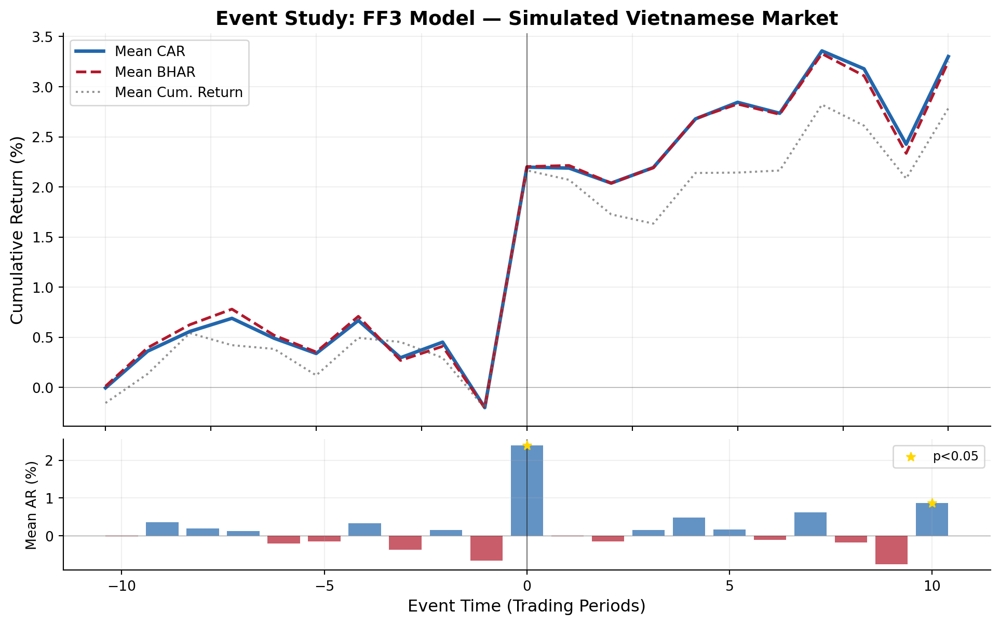
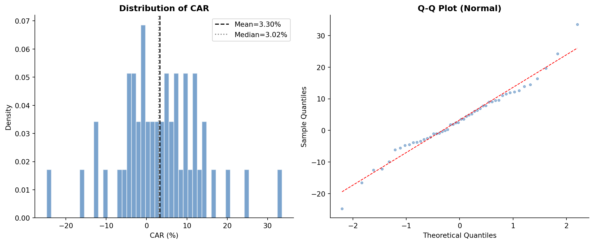
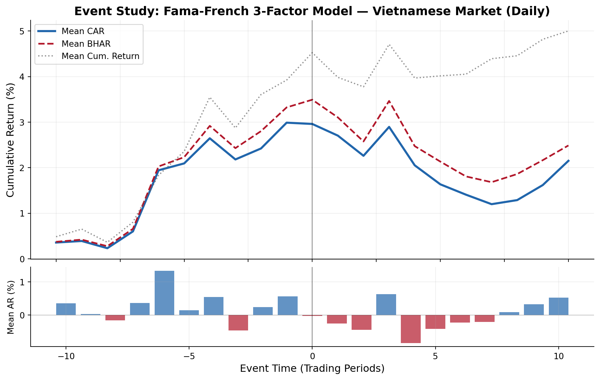
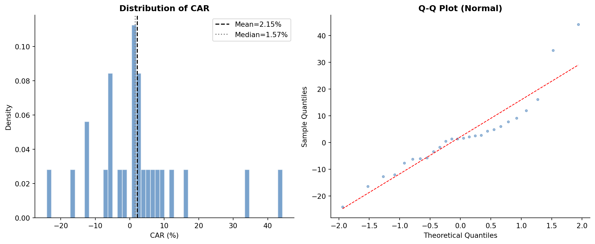
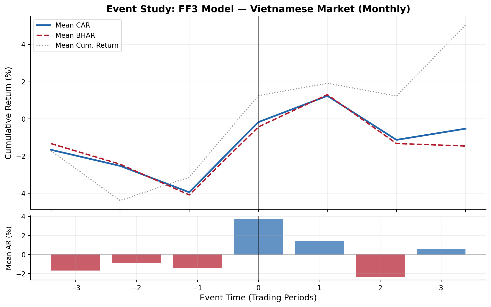

import numpy as np
import pandas as pd
import statsmodels.api as sm
from scipy import stats
from dataclasses import dataclass, field
from typing import Optional, List, Tuple
from enum import Enum
import warnings
import matplotlib.pyplot as plt
import matplotlib.ticker as mticker
warnings.filterwarnings('ignore')
pd.set_option('display.float_format', '{:.6f}'.format)
print("All libraries loaded.")40 Nghiên cứu sự kiện trong tài chính
Nghiên cứu sự kiện là một trong những phương pháp thực nghiệm lâu đời và được sử dụng rộng rãi nhất trong kinh tế học tài chính. Cốt lõi của phương pháp này là đo lường tác động của một sự kiện cụ thể lên giá trị doanh nghiệp bằng cách xem xét lợi nhuận bất thường của chứng khoán quanh thời điểm sự kiện xảy ra. Phương pháp dựa trên một tiền đề đơn giản: nếu thị trường vốn hiệu quả về mặt thông tin, tác động của sự kiện sẽ được phản ánh ngay lập tức vào giá chứng khoán, và mọi sai lệch so với lợi nhuận kỳ vọng “bình thường” đều có thể quy cho chính sự kiện đó.
Kể từ công trình tiên phong của Eugene F. Fama và c.s. (1969), những người đã nghiên cứu cách giá cổ phiếu điều chỉnh theo thông tin mới quanh các đợt chia tách cổ phiếu, nghiên cứu sự kiện đã trở thành nền tảng của nghiên cứu thực nghiệm trong tài chính, kế toán, kinh tế học và luật. Ball và Brown (2013) chứng minh rằng các công bố lợi nhuận kế toán truyền tải thông tin đến thị trường, một phát hiện đã mở ra hàng thập kỷ nghiên cứu về kế toán và công bố thông tin. Phương pháp này sau đó được hoàn thiện nhờ các đóng góp của Brown và Warner (1980) và Brown và Warner (1985), những người đã xác lập các tính chất thống kê của các phương pháp nghiên cứu sự kiện, còn MacKinlay (1997) đã hệ thống hóa các thông lệ tốt nhất vẫn được coi là chuẩn mực cho đến ngày nay.
Phạm vi ứng dụng rất đáng kinh ngạc. Nghiên cứu sự kiện đã được dùng để xem xét hiệu ứng tạo ra hoặc làm mất đi của cải từ các thương vụ mua bán và sáp nhập (Jensen và Ruback 1983; Andrade, Mitchell, và Stafford 2001), công bố lợi nhuận (Bernard và Thomas 1989), thay đổi cổ tức (Aharony và Swary 1980), thay đổi quy định (Schwert 1981), thay đổi lãnh đạo điều hành (Warner, Watts, và Wruck 1988) và các công bố kinh tế vĩ mô (Flannery và Protopapadakis 2002). Trong luật và kinh tế học, nghiên cứu sự kiện là công cụ chính để đo lường thiệt hại trong các vụ kiện gian lận chứng khoán (Mitchell và Netter 1993) và đánh giá tác động của các can thiệp quản lý (Binder 1998). Kothari và Warner (2007) ghi nhận hơn 500 nghiên cứu sự kiện đã được công bố chỉ riêng trên năm tạp chí tài chính hàng đầu trong giai đoạn 1974–2000.
40.0.1 Vì sao nghiên cứu sự kiện quan trọng
Sự phổ biến bền vững của nghiên cứu sự kiện xuất phát từ một số tính chất đáng chú ý:
Đo lường trực tiếp ý nghĩa kinh tế. Khác với các cách tiếp cận dựa trên hồi quy vốn ước lượng mối liên hệ, nghiên cứu sự kiện định lượng trực tiếp tác động bằng tiền của sự kiện lên giá trị doanh nghiệp. Lợi nhuận bất thường tích lũy (CAR) 3% đối với một doanh nghiệp có vốn hóa thị trường $10 tỷ tương đương $300 triệu của cải được tạo ra, một độ lớn hữu hình và có ý nghĩa kinh tế.
Giả định duy trì tối thiểu. Phương pháp chỉ đòi hỏi hiệu quả thị trường dạng bán mạnh (tức là giá phản ánh thông tin công khai), một giả định yếu hơn nhiều phương án thay thế.
Sức mạnh thống kê. Nghiên cứu sự kiện dữ liệu ngày có sức mạnh đáng kể trong việc phát hiện lợi nhuận bất thường, ngay cả với cỡ mẫu khiêm tốn. Brown và Warner (1985) chứng minh rằng mô hình thị trường phát hiện được lợi nhuận bất thường từ 1% trở lên với độ tin cậy cao, chỉ với mẫu nhỏ đến 20 chứng khoán.
Tính linh hoạt. Khung cơ bản chấp nhận các sự kiện riêng của doanh nghiệp hoặc trên toàn thị trường, được dự báo trước hoặc bất ngờ, và có thể điều chỉnh cho nhiều loại tài sản và cấu trúc thị trường khác nhau.
40.1 Tổng quan tài liệu và sự phát triển phương pháp luận
40.1.1 Khung cổ điển (1969-1985)
Nghiên cứu sự kiện hiện đại bắt nguồn từ Eugene F. Fama và c.s. (1969), sau đây gọi là FFJR, nghiên cứu lợi nhuận cổ phiếu theo tháng quanh 940 đợt chia tách cổ phiếu trong giai đoạn 1927–1959. Đổi mới then chốt của họ là dùng mô hình thị trường để phân tách lợi nhuận thành thành phần kỳ vọng (bình thường) và thành phần ngoài kỳ vọng (bất thường).
Ball và Brown (2013) độc lập phát triển một cách tiếp cận tương tự để nghiên cứu các công bố lợi nhuận, xác lập hàm lượng thông tin của dữ liệu kế toán. Đó là một phát hiện có ý nghĩa sâu sắc đối với cả giả thuyết thị trường hiệu quả lẫn tính thích đáng của báo cáo tài chính.
Brown và Warner (1980) cung cấp phân tích có hệ thống đầu tiên về phương pháp nghiên cứu sự kiện bằng mô phỏng. Nghiên cứu của họ trên dữ liệu tháng đã xác lập một số kết quả quan trọng: (i) mô hình thị trường đơn giản hoạt động ít nhất là tốt như các mô hình phức tạp hơn, (ii) các chỉ số thị trường trọng số theo vốn hóa có thể dẫn đến sai đặc định mô hình khi mẫu nghiêng về các doanh nghiệp nhỏ hơn, và (iii) kiểm định theo mặt cắt ngang thông thường có kích thước kiểm định được xác định đúng dưới giả thuyết không. Nghiên cứu tiếp theo của họ (Brown và Warner 1985) mở rộng phân tích sang dữ liệu ngày, ghi nhận tầm quan trọng của tính không chuẩn trong lợi nhuận ngày và sức mạnh kiểm định cao hơn của nghiên cứu theo ngày so với theo tháng.
40.1.2 Cải tiến mô hình rủi ro (1992-2015)
Sự ra đời của mô hình ba nhân tố Fama-French (Eugene F. Fama và French 1993) là một bước tiến lớn trong việc mô hình hóa lợi nhuận kỳ vọng. Việc bổ sung nhân tố quy mô (SMB) và giá trị (HML) vào mô hình thị trường đã cải thiện đáng kể mức độ phù hợp theo mặt cắt ngang của lợi nhuận kỳ vọng. Carhart (1997) bổ sung thêm nhân tố động lượng (UMD), tạo ra mô hình bốn nhân tố trở thành chuẩn mực trong nghiên cứu sự kiện suốt thập niên 2000. Sau đó, Eugene F. Fama và French (2015) giới thiệu các nhân tố khả năng sinh lời (RMW) và đầu tư (CMA) trong mô hình năm nhân tố của họ.
Việc lựa chọn mô hình rủi ro quan trọng đối với nghiên cứu sự kiện chủ yếu trong bối cảnh dài hạn. Kothari và Warner (2007) chỉ ra rằng với các nghiên cứu cửa sổ ngắn (3-5 ngày), mô hình thị trường và các mô hình đa nhân tố cho kết quả gần như giống hệt nhau, vì các nhân tố bổ sung giải thích rất ít biến thiên lợi nhuận ngày của từng doanh nghiệp. Tuy nhiên, với cửa sổ sự kiện vượt quá 20 ngày giao dịch, lựa chọn mô hình có thể ảnh hưởng đáng kể đến các suy luận.
40.1.3 Kiểm định lợi nhuận bất thường (1976-2010)
Việc kiểm định thống kê lợi nhuận bất thường đã phát triển đáng kể:
| Kiểm định | Năm | Tính chất chính | Tài liệu |
|---|---|---|---|
| Patell Z | 1976 | Chuẩn hóa theo \(\sigma\) của giai đoạn ước lượng; gán trọng số cho doanh nghiệp tỷ lệ nghịch với độ biến động | Patell (1976) |
| Cross-Sectional \(t\) | 1980 | Cho phép phương sai thay đổi do sự kiện | Brown và Warner (1980) |
| BMP | 1991 | Vững trước phương sai do sự kiện | Boehmer, Masumeci, và Poulsen (1991) |
| Corrado Rank | 1989 | Phi tham số; vững trước tính không chuẩn | Corrado (1989) |
| Generalized Sign | 1992 | Phi tham số; dùng đường cơ sở của cửa sổ ước lượng | Cowan (1992) |
| Kolari-Pynnönen | 2010 | Tính đến sự phụ thuộc theo mặt cắt ngang | Kolari và Pynnönen (2010) |
| Skewness-Adjusted | 1992 | Hiệu chỉnh độ lệch của BHAR | Hall (1992) |
40.1.4 CAR so với BHAR
Lợi nhuận bất thường tích lũy (CAR) cộng dồn các lợi nhuận bất thường hằng ngày, trong khi lợi nhuận bất thường mua và nắm giữ (BHAR) tính lãi kép cho lợi nhuận rồi trừ đi lợi nhuận chuẩn đối chiếu (benchmark) cũng được tính lãi kép. Barber và Lyon (1997) chứng minh rằng BHAR phản ánh tốt hơn trải nghiệm thực tế của nhà đầu tư, vì nhà đầu tư kiếm được lợi nhuận kép chứ không phải lợi nhuận cộng dồn. Tuy nhiên, Eugene F. Fama (1998) và Mitchell và Stafford (2000) chỉ ra rằng BHAR thể hiện sự phụ thuộc theo mặt cắt ngang nghiêm trọng và độ lệch dương. Với cửa sổ sự kiện ngắn (dưới 10 ngày), sự khác biệt giữa CAR và BHAR là không đáng kể. Với các cửa sổ dài hơn, nên báo cáo cả hai.
40.1.5 Những lưu ý đối với thị trường mới nổi
Nghiên cứu sự kiện ở các thị trường mới nổi đối mặt với những thách thức riêng:
Giao dịch thưa thớt. Nhiều chứng khoán ở thị trường mới nổi ít được giao dịch, gây thiên lệch cho các ước lượng beta của mô hình thị trường. Scholes và Williams (1977) và Dimson (1979) đề xuất các hiệu chỉnh bằng cách dùng lợi nhuận thị trường dẫn trước và trễ sau.
Sự sẵn có của nhân tố. Trong khi các nhân tố Fama-French sẵn có cho các thị trường phát triển, các nhân tố của thị trường mới nổi thường phải được xây dựng tại địa phương.
Vi cấu trúc thị trường. Biên độ giá (\(\pm\) 7% trên HOSE, \(\pm\) 10% trên HNX, \(\pm\) 15% trên UPCOM tại Việt Nam), thanh toán T+2 và việc không có bán khống ảnh hưởng đến tốc độ điều chỉnh giá. Các nhà nghiên cứu nên cân nhắc cửa sổ sự kiện rộng hơn để phù hợp với việc thông tin được phản ánh chậm hơn (Bhattacharya và c.s. 2000; Griffin, Kelly, và Nardari 2010).
40.1.6 Ngoài lợi nhuận quanh công bố: sáp nhập, mua lại và phúc lợi của người lao động
Sáp nhập và mua lại là ứng dụng điển hình của nghiên cứu sự kiện, và các sự thật về cửa sổ công bố đã được xác lập vững chắc: cổ đông của công ty mục tiêu kiếm được lợi nhuận bất thường dương lớn, trong khi lợi nhuận trung bình của bên mua dao động quanh mức không (Jensen và Ruback 1983; Andrade, Mitchell, và Stafford 2001). Tuy nhiên, CAR quanh công bố chỉ đo lường của cải của cổ đông. Một nhánh tài liệu đang phát triển áp dụng cùng logic sự kiện cho các kết quả phi giá để hỏi các thương vụ sáp nhập tác động thế nào đến những bên liên quan khác của doanh nghiệp, trước hết là người lao động.
Bằng chứng trực tiếp nhất đến từ Bach và c.s. (2026), những người liên kết dữ liệu ghép giữa chủ sử dụng lao động và người lao động của Thụy Điển với các cơ sở dữ liệu sức khỏe cá nhân, và ghi nhận rằng tỷ lệ căng thẳng, lo âu và trầm cảm cũng như việc sử dụng thuốc tâm thần tăng đáng kể ở người lao động sau các thương vụ sáp nhập. Các tác động này không phải là hiện tượng của các công ty mục tiêu gặp khó khăn: chúng xuất hiện ở người lao động của cả công ty mục tiêu và bên mua, ở các công ty yếu cũng như đang tăng trưởng và có lợi nhuận, và tập trung ở lao động chân tay, lao động kỹ năng thấp hơn, và những người có sự nghiệp bị đình trệ trong công ty sau sáp nhập. Đáng chú ý, những thương vụ sáp nhập gây ra nhiều bệnh tâm thần hơn ở người lao động cũng có kết quả hoạt động kém hơn sau giao dịch: chi phí con người của một thương vụ tích hợp kém và chi phí kinh tế của nó vận động cùng nhau, do đó phúc lợi của người lao động mang thông tin về chất lượng thương vụ chứ không đơn thuần là một khoản chuyển giao từ người lao động sang cổ đông.
Đối trọng về mặt tiền bạc của các chi phí sức khỏe này được Lagaras (2026) ghi nhận, người liên kết dữ liệu hành chính ghép giữa chủ sử dụng lao động và người lao động của Brazil với dữ liệu M&A do tác giả tự thu thập, và theo dõi thu nhập của những người lao động hiện hữu của công ty mục tiêu trong nhiều năm sau thương vụ. Người lao động của công ty mục tiêu chịu sụt giảm thu nhập lớn và dai dẳng, nhưng các khoản mất mát tập trung gần như hoàn toàn ở những người lao động rời khỏi công ty mục tiêu: những người ở lại phần lớn không bị ảnh hưởng. Việc phân rã các khoản mất mát chính là điều làm cho bài báo có giá trị về mặt phương pháp luận. Một phần là do mất việc (một cú sốc mạnh về việc làm, phần lớn ngắn hạn), nhưng phần lớn hơn và bền hơn là chi phí tái phân bổ: người lao động bị mất việc chuyển sang các chủ sử dụng lao động trả lương thấp hơn, với khoảng 47% rơi vào các công ty có phần bù tiền lương thấp hơn, và sự sụt giảm của phần bù tiền lương của chủ sử dụng lao động chiếm phần lớn khoản mất tiền lương dài hạn. Các khoản mất mát nặng nhất với lao động kỹ năng thấp và lớn tuổi, và với những người có nhiều vốn nhân lực đặc thù cho doanh nghiệp, phù hợp với việc phá hủy giá trị ghép cặp đặc thù cho công việc và sự mất giá của kỹ năng đặc thù cho ngành, hơn là sự suy giảm đồng đều của năng suất lao động. Đọc cùng với Bach và c.s. (2026), hai bài báo mô tả cùng một sự kiện qua các cơ sở dữ liệu khác nhau: một thương vụ sáp nhập tái phân bổ lao động, và những người lao động bị tái phân bổ gánh chịu chi phí cả về thu nhập lẫn sức khỏe.
Các kết quả này nằm ở giao điểm của nhiều nhánh tài liệu. Về mặt sức khỏe, Sullivan và von Wachter (2009) chỉ ra bằng dữ liệu hành chính của Mỹ rằng việc mất việc làm tăng tỷ lệ tử vong của người lao động trong nhiều thập kỷ sau đó, và Engelberg và Parsons (2016) ghi nhận rằng các đợt sụt giảm của thị trường chứng khoán dự báo số ca nhập viện cùng ngày, đặc biệt vì lo âu và các tình trạng tâm lý liên quan, do đó các cú sốc kinh tế truyền sang sức khỏe một cách nhanh chóng và dai dẳng. Về khía cạnh lao động của M&A, Dessaint, Golubov, và Volpin (2017) chỉ ra rằng luật bảo vệ việc làm nghiêm ngặt, bằng cách khiến việc tái cơ cấu lao động sau sáp nhập tốn kém hơn, làm giảm cả hoạt động thâu tóm lẫn lợi ích từ sáp nhập; John, Knyazeva, và Knyazeva (2015) thấy rằng bên mua hoạt động trong môi trường bảo vệ mạnh quyền lợi người lao động kiếm được lợi nhuận bất thường quanh công bố thấp hơn, cắt giảm ít việc làm hơn sau thương vụ và thực hiện được lợi ích kết hợp nhỏ hơn; Lee, Mauer, và Xu (2018) chỉ ra rằng các thương vụ giữa các công ty có vốn nhân lực liên quan có nhiều khả năng xảy ra hơn, kiếm được lợi nhuận bất thường quanh công bố cao hơn và hoạt động tốt hơn sau đó; và Ma, Ouimet, và Simintzi (2025) ghi nhận rằng M&A đóng vai trò là kênh áp dụng công nghệ, trong đó các công việc thâm dụng tác vụ thường quy ở công ty mục tiêu bị thay thế, liên kết hoạt động sáp nhập với bất bình đẳng tiền lương.
Đối với Việt Nam, phía cổ đông của chương trình nghiên cứu này có thể triển khai trực tiếp bằng quy trình được phát triển trong chương này: các thương vụ mốc như việc ThaiBev mua lại Sabeco năm 2017, làn sóng các khoản đầu tư chiến lược của nước ngoài vào các lĩnh vực ngân hàng và tiêu dùng, và việc chuyển giao bắt buộc các ngân hàng yếu cho các tổ chức lành mạnh hơn trong giai đoạn 2024–2025 đều cung cấp những ngày công bố rõ ràng để ước lượng CAR (với các lưu ý về biên độ giá nêu trên). Phía các bên liên quan khó hơn, nhưng không xa tầm với như thoạt nhìn. Việt Nam không có cơ sở dữ liệu sức khỏe có thể liên kết, vì vậy thiết kế kiểu Thụy Điển theo tinh thần của Bach và c.s. (2026) hiện chưa khả thi. Tuy nhiên, thiết kế của Brazil trong Lagaras (2026) là một khuôn mẫu gần hơn nhiều: nó chỉ đòi hỏi dữ liệu hành chính ghép giữa chủ sử dụng lao động và người lao động, và Bảo hiểm Xã hội Việt Nam lưu giữ chính loại dữ liệu đóng góp theo thời gian này, ghi lại danh tính chủ sử dụng lao động và thu nhập được bảo hiểm của người lao động tham gia. Một nhà nghiên cứu có được quyền truy cập các hồ sơ đó (hoặc các bản trích xuất ẩn danh) có thể tái lập phân rã cốt lõi—tách tác động mất việc khỏi tác động tái phân bổ, và nhận diện phần bù tiền lương của chủ sử dụng lao động từ những người lao động chuyển công ty—cho các thương vụ của Việt Nam, với các lưu ý rằng việc làm phi chính thức nằm ngoài hệ thống và thu nhập đóng bảo hiểm bị giới hạn trần nên bị chặn trên (dữ liệu bị cắt ở phía trên). Nếu không được, các cuộc khảo sát doanh nghiệp, khảo sát lực lượng lao động, và các công bố thông tin về việc làm và quỹ lương ở cấp doanh nghiệp cung cấp những cửa sổ thô hơn nhưng dùng được để nhìn vào các kết quả việc làm và tiền lương sau sáp nhập. Việc một nghiên cứu ở thị trường mới nổi là mô hình phương pháp luận ở đây không phải là ngẫu nhiên: sự kết hợp giữa độ bao phủ dữ liệu hành chính và một thị trường M&A sôi động nhưng ít bị quản lý chặt của Brazil giống quỹ đạo của Việt Nam hơn nhiều so với bối cảnh Bắc Âu hay Mỹ. Bài học rộng hơn từ Bach và c.s. (2026) và Lagaras (2026) cho bất kỳ nghiên cứu sự kiện M&A nào đều đáng ghi nhớ: CAR dựa trên giá nắm bắt ước tính của thị trường về giá trị cổ đông được tạo ra tại thời điểm công bố, chứ không phải các hệ quả phúc lợi của thương vụ. Và vì sự căng thẳng tâm lý của người lao động dự báo kết quả yếu sau sáp nhập, ngay cả một nhà phân tích chỉ tập trung vào cổ đông cũng có lý do để theo dõi điều gì xảy ra với lực lượng lao động.
40.2 Khung toán học
Mục này trình bày đầy đủ đặc tả toán học của phương pháp nghiên cứu sự kiện. Chúng ta theo quy ước ký hiệu của Campbell và c.s. (1998) và Kothari và Warner (2007).
40.2.1 Dòng thời gian và các cửa sổ
Dòng thời gian của nghiên cứu sự kiện được xác định tương đối so với ngày sự kiện, ký hiệu là \(\tau = 0\). Mọi ngày đều được đo bằng ngày giao dịch:
\[ \underbrace{T_0 + 1, \ldots, T_1}_{\text{Estimation Window (L₁ days)}} \quad \underbrace{\quad}_{\text{Gap (G days)}} \quad \underbrace{\tau_1, \ldots, 0, \ldots, \tau_2}_{\text{Event Window (L₂ days)}} \]
trong đó:
- Cửa sổ ước lượng: \(L_1\) ngày giao dịch dùng để ước lượng các tham số của mô hình rủi ro
- Khoảng đệm: \(G\) ngày giao dịch ngăn cách cửa sổ ước lượng và cửa sổ sự kiện, tránh nhiễm bẩn do rò rỉ thông tin trước sự kiện
- Cửa sổ sự kiện: \(L_2 = \tau_2 - \tau_1 + 1\) ngày giao dịch tập trung quanh ngày sự kiện
Ví dụ, với \(L_1 = 150\), \(G = 15\), \(\tau_1 = -10\), \(\tau_2 = +10\): cửa sổ ước lượng bao gồm các ngày giao dịch \([-175, -25]\) so với sự kiện, và cửa sổ sự kiện bao gồm \([-10, +10]\).
40.2.2 Các mô hình lợi nhuận bình thường
Gọi \(R_{it}\) là lợi nhuận của chứng khoán \(i\) vào ngày giao dịch \(t\), \(R_{ft}\) là lãi suất phi rủi ro và \(R_{mt}\) là lợi nhuận thị trường. Chúng ta triển khai sáu mô hình:
Mô hình 0: Lợi nhuận điều chỉnh theo thị trường. Giả định \(\beta_i = 1\) và \(\alpha_i = 0\) cho mọi doanh nghiệp:
\[ AR_{it}^{MA} = R_{it} - R_{mt} \]
Mô hình 1: Mô hình thị trường (Sharpe 1964):
\[ R_{it} = \alpha_i + \beta_i R_{mt} + \varepsilon_{it}, \quad E[\varepsilon_{it}] = 0, \quad \text{Var}[\varepsilon_{it}] = \sigma^2_{\varepsilon_i} \]
\[ AR_{it}^{MM} = R_{it} - \hat{\alpha}_i - \hat{\beta}_i R_{mt} \]
Mô hình 2: Ba nhân tố Fama-French (Eugene F. Fama và French 1993):
\[ R_{it} - R_{ft} = \alpha_i + \beta_{i,1}(R_{mt} - R_{ft}) + \beta_{i,2} \cdot SMB_t + \beta_{i,3} \cdot HML_t + \varepsilon_{it} \]
Mô hình 3: Bốn nhân tố Carhart (Carhart 1997):
\[ R_{it} - R_{ft} = \alpha_i + \beta_{i,1}(R_{mt} - R_{ft}) + \beta_{i,2} \cdot SMB_t + \beta_{i,3} \cdot HML_t + \beta_{i,4} \cdot UMD_t + \varepsilon_{it} \]
Mô hình 4: Năm nhân tố Fama-French (Eugene F. Fama và French 2015):
\[ R_{it} - R_{ft} = \alpha_i + \beta_{i,1}(R_{mt} - R_{ft}) + \beta_{i,2} \cdot SMB_t + \beta_{i,3} \cdot HML_t + \beta_{i,4} \cdot RMW_t + \beta_{i,5} \cdot CMA_t + \varepsilon_{it} \]
Mô hình 5: Mô hình nhân tố do người dùng chỉ định:
\[ R_{it} - R_{ft} = \alpha_i + \sum_{k=1}^{K} \beta_{i,k} F_{k,t} + \varepsilon_{it} \]
40.2.3 Tổng hợp: CAR và BHAR
Lợi nhuận bất thường tích lũy cộng dồn lợi nhuận bất thường hằng ngày:
\[ CAR_i(\tau_1, \tau_2) = \sum_{t=\tau_1}^{\tau_2} AR_{it}, \qquad \overline{CAR}(\tau_1, \tau_2) = \frac{1}{N} \sum_{i=1}^{N} CAR_i(\tau_1, \tau_2) \]
Lợi nhuận bất thường mua và nắm giữ tính lãi kép cho lợi nhuận:
\[ BHAR_i(\tau_1, \tau_2) = \prod_{t=\tau_1}^{\tau_2}(1 + R_{it}) - \prod_{t=\tau_1}^{\tau_2}(1 + \hat{E}[R_{it}]) \]
40.2.4 Lợi nhuận được chuẩn hóa
Lợi nhuận bất thường chuẩn hóa của doanh nghiệp \(i\) vào ngày \(t\) là:
\[ SAR_{it} = \frac{AR_{it}}{\hat{\sigma}_{\varepsilon_i}} \]
Lợi nhuận bất thường tích lũy chuẩn hóa là:
\[ SCAR_i(\tau_1, \tau_2) = \frac{CAR_i(\tau_1, \tau_2)}{\hat{\sigma}_{\varepsilon_i} \sqrt{L_2}} \]
40.2.5 Các thống kê kiểm định
Gọi \(N\) là số quan sát doanh nghiệp–sự kiện.
Kiểm định 1: Kiểm định \(t\) theo mặt cắt ngang. Cho phép phương sai do sự kiện; giả định độc lập theo mặt cắt ngang:
\[ t_{CS} = \frac{\overline{CAR}}{s_{CAR}/\sqrt{N}}, \quad s_{CAR} = \sqrt{\frac{1}{N-1}\sum_{i=1}^{N}(CAR_i - \overline{CAR})^2} \]
Kiểm định 2: Kiểm định Patell Z (Patell 1976). Gán trọng số cho doanh nghiệp tỷ lệ nghịch với độ biến động:
\[ Z_{Patell} = \frac{\sum_{i=1}^{N} SCAR_i}{\sqrt{\sum_{i=1}^{N} \frac{K_i - 2}{K_i - 4}}} \]
Kiểm định 3: Kiểm định BMP (Boehmer, Masumeci, và Poulsen 1991). Vững trước phương sai do sự kiện:
\[ t_{BMP} = \frac{\overline{SCAR}}{s_{SCAR}/\sqrt{N}} \]
Kiểm định 4: BMP hiệu chỉnh Kolari-Pynnönen (Kolari và Pynnönen 2010). Tính đến sự phụ thuộc theo mặt cắt ngang:
\[ t_{KP} = t_{BMP} \times \sqrt{\frac{1}{1 + (N-1)\bar{r}}} \]
trong đó \(\bar{r}\) là hệ số tương quan chéo trung bình theo cặp của các phần dư trong giai đoạn ước lượng.
Kiểm định 5: Kiểm định dấu tổng quát (Cowan 1992):
\[ Z_{GSign} = \frac{\hat{p} - \hat{p}_0}{\sqrt{\hat{p}_0(1-\hat{p}_0)/N}} \]
Kiểm định 6: Kiểm định dấu:
\[ Z_{Sign} = \frac{N^{+} - 0.5N}{\sqrt{0.25N}} \]
Kiểm định 7: Kiểm định \(t\) hiệu chỉnh độ lệch (Hall 1992):
\[ t_{SA} = \sqrt{N}\left(\bar{z} + \frac{1}{3}\hat{\gamma}\bar{z}^2 + \frac{1}{27}\hat{\gamma}^2\bar{z}^3 + \frac{1}{6N}\hat{\gamma}\right) \]
Kiểm định 8: Kiểm định hạng có dấu Wilcoxon: Một kiểm định phi tham số xem trung vị của CAR có khác không hay không.
Bảng dưới đây tóm tắt các giả định của từng kiểm định:
| Kiểm định | Phương sai do sự kiện | Độc lập theo mặt cắt ngang | Tính chuẩn |
|---|---|---|---|
| Cross-Sectional \(t\) | Vững | Giả định | Giả định |
| Patell Z | Giả định không đổi | Giả định | Giả định |
| BMP | Vững | Giả định | Giả định |
| Kolari-Pynnönen | Vững | Vững | Giả định |
| Generalized Sign | Vững | Giả định | Vững |
| Corrado Rank | Vững | Giả định | Vững |
| Skewness-Adjusted | Vững | Giả định | Một phần |
| Wilcoxon | Vững | Giả định | Vững |
40.3 Triển khai bằng Python
40.3.1 Triết lý thiết kế
Phần triển khai của chúng ta tuân theo các nguyên tắc sau:
- Tính mô-đun: Mỗi thành phần (lịch giao dịch, ước lượng, tính AR, kiểm định) là một hàm riêng.
- Vector hóa: Mọi thao tác đều dùng pandas/numpy để đạt hiệu năng trên các bộ dữ liệu lớn.
- Khả năng cấu hình: Mọi tham số đều do người dùng cấu hình được thông qua một dataclass.
- Tính minh bạch: Các kết quả trung gian được lưu giữ để kiểm tra.
- Sẵn sàng vận hành thực tế: Kiểm tra đầu vào toàn diện, xử lý dữ liệu thiếu và các trường hợp biên.
40.3.2 Thiết lập và nhập thư viện
import pandas as pd
import sqlite3
tidy_finance = sqlite3.connect(database="data/tidy_finance_python.sqlite")
factors_ff3_daily = pd.read_sql_query(
sql="SELECT * FROM factors_ff3_daily",
con=tidy_finance,
parse_dates=["date"]
)
factors_ff5_daily = pd.read_sql_query(
sql="SELECT * FROM factors_ff5_daily",
con=tidy_finance,
parse_dates=["date"]
)
factors_ff3_monthly = pd.read_sql_query(
sql="SELECT * FROM factors_ff3_monthly",
con=tidy_finance,
parse_dates=["date"]
)
factors_ff5_monthly = pd.read_sql_query(
sql="SELECT * FROM factors_ff5_monthly",
con=tidy_finance,
parse_dates=["date"]
)prices_monthly = pd.read_sql_query(
sql="""
SELECT symbol, date, ret_excess, mktcap, mktcap_lag, risk_free
FROM prices_monthly
""",
con=tidy_finance,
parse_dates={"date"}
).dropna()
prices_daily = pd.read_sql_query(
sql="""
SELECT symbol, date, ret_excess, mktcap, mktcap_lag, risk_free
FROM prices_daily
""",
con=tidy_finance,
parse_dates={"date"}
).dropna()40.3.3 Cấu hình
class RiskModel(Enum):
"""Supported risk models for expected return computation."""
MARKET_ADJ = "market_adjusted"
MARKET_MODEL = "market_model"
FF3 = "ff3"
CARHART = "carhart"
FF5 = "ff5"
CUSTOM = "custom"
@dataclass
class EventStudyConfig:
"""Complete configuration for an event study.
Attributes
----------
estimation_window : int
Length of estimation period in trading days. Brown and Warner (1985)
suggest ≥100 days; MacKinlay (1997) recommends 120 as standard.
event_window_start : int
Start of event window relative to event date (e.g., -10).
event_window_end : int
End of event window relative to event date (e.g., +10).
gap : int
Trading days between estimation and event windows. Prevents
contamination from pre-event information leakage.
min_estimation_obs : int
Minimum non-missing returns required in estimation period.
risk_model : RiskModel
Risk model for computing expected returns.
custom_factors : list
Column names for user-specified factors (CUSTOM model only).
thin_trading_adj : str or None
None, 'scholes_williams', or 'dimson'.
dimson_lags : int
Number of leads/lags for Dimson (1979) correction.
"""
estimation_window: int = 150
event_window_start: int = -10
event_window_end: int = 10
gap: int = 15
min_estimation_obs: int = 120
risk_model: RiskModel = RiskModel.MARKET_MODEL
custom_factors: List[str] = field(default_factory=list)
thin_trading_adj: Optional[str] = None
dimson_lags: int = 1
@property
def event_window_length(self) -> int:
return self.event_window_end - self.event_window_start + 1
def validate(self):
assert self.estimation_window > 0
assert self.event_window_start <= self.event_window_end
assert self.gap >= 0
assert self.min_estimation_obs <= self.estimation_window
if self.risk_model == RiskModel.CUSTOM:
assert len(self.custom_factors) > 0
return True
# Demonstrate
config_demo = EventStudyConfig(
estimation_window=150, event_window_start=-10, event_window_end=10,
gap=15, min_estimation_obs=120, risk_model=RiskModel.FF3
)
config_demo.validate()
print(f"Event window length: {config_demo.event_window_length} days")
print(f"Model: {config_demo.risk_model.value}")40.3.4 Bước 1: Xây dựng lịch giao dịch
Một lịch giao dịch chính xác là nền tảng. Nó ánh xạ mọi ngày sự kiện sang các ngày lịch chính xác cho điểm bắt đầu/kết thúc của cửa sổ ước lượng và cửa sổ sự kiện, có tính đến cuối tuần, ngày lễ và các ngày không giao dịch.
def build_trading_calendar(trading_dates, config):
"""Build a trading calendar mapping event dates to window boundaries.
For each potential event date, identifies the calendar dates for the
start/end of the estimation period and event window using only actual
trading days.
Parameters
----------
trading_dates : array-like
Sorted unique trading dates in the market.
config : EventStudyConfig
Returns
-------
pd.DataFrame with columns: estper_beg, estper_end, evtwin_beg,
evtdate, evtwin_end, cal_index
"""
dates = pd.Series(sorted(pd.to_datetime(trading_dates).unique()))
n = len(dates)
L1 = config.estimation_window
G = config.gap
s = config.event_window_start
L2 = config.event_window_length
# Offsets (FIRSTOBS logic)
o0 = 0 # estper_beg
o1 = L1 - 1 # estper_end
o2 = L1 + G # evtwin_beg
o3 = L1 + G - s # evtdate
o4 = L1 + G + L2 - 1 # evtwin_end
max_offset = o4
valid = n - max_offset
if valid <= 0:
raise ValueError(f"Need ≥{max_offset+1} trading dates, have {n}")
cal = pd.DataFrame({
'estper_beg': dates.iloc[o0:o0+valid].values,
'estper_end': dates.iloc[o1:o1+valid].values,
'evtwin_beg': dates.iloc[o2:o2+valid].values,
'evtdate': dates.iloc[o3:o3+valid].values,
'evtwin_end': dates.iloc[o4:o4+valid].values,
})
cal['cal_index'] = range(1, len(cal)+1)
# Validate window lengths using a sample row
idx = min(10, len(cal)-1)
row = cal.iloc[idx]
est_n = dates[(dates >= row['estper_beg']) & (dates <= row['estper_end'])].shape[0]
evt_n = dates[(dates >= row['evtwin_beg']) & (dates <= row['evtwin_end'])].shape[0]
assert est_n == L1, f"Estimation window: {est_n} ≠ {L1}"
assert evt_n == L2, f"Event window: {evt_n} ≠ {L2}"
return cal
# Demo
demo_dates = pd.bdate_range('2018-01-01', '2023-12-31', freq='B')
demo_cal = build_trading_calendar(demo_dates, config_demo)
print(f"Calendar: {len(demo_cal)} potential event dates")
print(demo_cal.head(3).to_string(index=False))40.3.5 Bước 2: Căn chỉnh ngày sự kiện
Khi một sự kiện xảy ra vào ngày không giao dịch, hãy căn chỉnh sang ngày giao dịch kế tiếp có sẵn.
def align_events(events, calendar, id_col='symbol', date_col='event_date'):
"""Align event dates to trading calendar.
Non-trading-day events are shifted forward to the next trading day.
Parameters
----------
events : pd.DataFrame with [id_col, date_col] and optional 'group'
calendar : pd.DataFrame from build_trading_calendar()
Returns
-------
pd.DataFrame with window boundaries for each firm-event
"""
events = events.copy()
events[date_col] = pd.to_datetime(events[date_col])
cal_dates = calendar[['evtdate']].drop_duplicates().sort_values('evtdate')
merged = pd.merge_asof(
events.sort_values(date_col),
cal_dates.rename(columns={'evtdate': 'aligned_date'}),
left_on=date_col, right_on='aligned_date',
direction='forward'
)
result = merged.merge(calendar, left_on='aligned_date', right_on='evtdate', how='inner')
shifted = (result[date_col] != result['evtdate']).sum()
if shifted > 0:
print(f" {shifted} event(s) shifted to next trading day")
result = result.rename(columns={date_col: 'original_date'})
result = result.drop_duplicates(subset=[id_col, 'evtdate'])
return result40.3.6 Bước 3: Trích xuất dữ liệu và ghép nhân tố
Trích xuất lợi nhuận của từng chứng khoán–sự kiện trên toàn bộ cửa sổ ước lượng + sự kiện và ghép các nhân tố rủi ro.
def extract_returns(aligned_events, prices, factors, config,
id_col='symbol', date_col='date', ret_col='ret',
mkt_col='mkt_excess', rf_col='risk_free'):
"""Extract stock returns and merge risk factors for each event.
For each security-event, retrieves daily returns from estper_beg
through evtwin_end and merges appropriate risk factors.
"""
prices = prices.copy()
factors = factors.copy()
prices[date_col] = pd.to_datetime(prices[date_col])
factors[date_col] = pd.to_datetime(factors[date_col])
# Recover raw return from excess return if needed
if ret_col not in prices.columns and 'ret_excess' in prices.columns:
if rf_col in factors.columns:
prices = prices.merge(factors[[date_col, rf_col]].drop_duplicates(),
on=date_col, how='left')
prices[ret_col] = prices['ret_excess'] + prices[rf_col]
# Factor columns based on model
model = config.risk_model
fac_cols = [mkt_col] if mkt_col in factors.columns else []
if rf_col in factors.columns:
fac_cols.append(rf_col)
model_factors = {
RiskModel.FF3: ['smb', 'hml'],
RiskModel.CARHART: ['smb', 'hml', 'umd'],
RiskModel.FF5: ['smb', 'hml', 'rmw', 'cma'],
RiskModel.CUSTOM: config.custom_factors,
}
for f in model_factors.get(model, []):
if f in factors.columns:
fac_cols.append(f)
fac_cols = list(set([date_col] + fac_cols))
# Vectorized merge approach: join events with prices on id + date range
frames = []
for _, evt in aligned_events.iterrows():
mask = ((prices[id_col] == evt[id_col]) &
(prices[date_col] >= evt['estper_beg']) &
(prices[date_col] <= evt['evtwin_end']))
fd = prices.loc[mask, [id_col, date_col, ret_col]].copy()
if len(fd) == 0:
continue
fd['evtdate'] = evt['evtdate']
fd['estper_beg'] = evt['estper_beg']
fd['estper_end'] = evt['estper_end']
fd['evtwin_beg'] = evt['evtwin_beg']
fd['evtwin_end'] = evt['evtwin_end']
if 'group' in evt.index:
fd['group'] = evt['group']
frames.append(fd)
if not frames:
raise ValueError("No return data found for any events")
result = pd.concat(frames, ignore_index=True)
result = result.merge(factors[fac_cols].drop_duplicates(), on=date_col, how='left')
# Excess and market-adjusted returns
if rf_col in result.columns:
result['ret_excess'] = result[ret_col] - result[rf_col]
else:
result['ret_excess'] = result[ret_col]
if mkt_col in result.columns:
result['ret_mktadj'] = result['ret_excess'] - result[mkt_col]
result = result.sort_values([id_col, 'evtdate', date_col]).reset_index(drop=True)
n_evts = result.groupby([id_col, 'evtdate']).ngroups
print(f" Extracted {len(result):,} obs for {n_evts} firm-events")
return result40.3.7 Bước 4: Ước lượng mô hình rủi ro
Ước lượng các tham số của mô hình rủi ro trên cửa sổ ước lượng.
# | label: estimation
# | code-summary: "Risk model estimation"
def estimate_model(
event_returns, config, id_col="symbol", date_col="date", ret_col="ret"
):
"""Estimate risk model parameters for each firm-event.
Runs OLS over the estimation window. Returns alpha, betas, sigma,
R^2, nobs, and residuals for cross-correlation computation.
"""
model = config.risk_model
# Define regression specification
dep_var_map = {
RiskModel.MARKET_ADJ: "ret_mktadj",
RiskModel.MARKET_MODEL: ret_col,
RiskModel.FF3: "ret_excess",
RiskModel.CARHART: "ret_excess",
RiskModel.FF5: "ret_excess",
RiskModel.CUSTOM: "ret_excess",
}
indep_var_map = {
RiskModel.MARKET_ADJ: [],
RiskModel.MARKET_MODEL: ["mkt_excess"],
RiskModel.FF3: ["mkt_excess", "smb", "hml"],
RiskModel.CARHART: ["mkt_excess", "smb", "hml", "umd"],
RiskModel.FF5: ["mkt_excess", "smb", "hml", "rmw", "cma"],
RiskModel.CUSTOM: config.custom_factors,
}
dep_var = dep_var_map[model]
indep_vars = indep_var_map[model]
est = event_returns[
(event_returns[date_col] >= event_returns["estper_beg"])
& (event_returns[date_col] <= event_returns["estper_end"])
].copy()
params_list = []
for (firm, evtdate), grp in est.groupby([id_col, "evtdate"]):
valid = grp.dropna(subset=[dep_var] + indep_vars)
nobs = len(valid)
if nobs < config.min_estimation_obs:
continue
y = valid[dep_var].values
if len(indep_vars) == 0:
# Market-adjusted: intercept-only for variance
p = {
id_col: firm,
"evtdate": evtdate,
"alpha": y.mean(),
"sigma": y.std(ddof=1),
"variance": y.var(ddof=1),
"nobs": nobs,
"r_squared": 0.0,
"_residuals": y - y.mean(),
}
else:
X = sm.add_constant(valid[indep_vars].values)
res = sm.OLS(y, X).fit()
p = {
id_col: firm,
"evtdate": evtdate,
"alpha": res.params[0],
"sigma": np.sqrt(res.mse_resid),
"variance": res.mse_resid,
"nobs": nobs,
"r_squared": res.rsquared if np.isfinite(res.rsquared) else np.nan,
"_residuals": res.resid,
}
for j, var in enumerate(indep_vars):
p[f"beta_{var}"] = res.params[j + 1]
# Skip degenerate firms (zero or near-zero variance)
if p["sigma"] < 1e-6:
continue
params_list.append(p)
if not params_list:
raise ValueError("No firm-events passed minimum observation filter")
params_df = pd.DataFrame(params_list)
n_total = event_returns.groupby([id_col, "evtdate"]).ngroups
print(
f" Estimated {len(params_df)}/{n_total} firm-events "
f"(mean R^2 = {params_df['r_squared'].dropna().mean():.4f})"
)
return params_df40.3.8 Bước 5: Tính lợi nhuận bất thường
Tính AR, CAR, BHAR, SAR, SCAR cho từng doanh nghiệp–sự kiện–ngày.
# | label: abnormal-returns
# | code-summary: "Compute abnormal returns, CARs, BHARs"
def compute_abnormal_returns(
event_returns, params, config, id_col="symbol", date_col="date", ret_col="ret"
):
"""Compute abnormal returns and aggregate to CARs/BHARs.
Returns
-------
daily_ar : pd.DataFrame - daily AR/SAR/CAR/BHAR per firm-event-date
event_ar : pd.DataFrame - event-level CAR/BHAR/SCAR per firm-event
"""
model = config.risk_model
factor_map = {
RiskModel.MARKET_ADJ: [],
RiskModel.MARKET_MODEL: ["mkt_excess"],
RiskModel.FF3: ["mkt_excess", "smb", "hml"],
RiskModel.CARHART: ["mkt_excess", "smb", "hml", "umd"],
RiskModel.FF5: ["mkt_excess", "smb", "hml", "rmw", "cma"],
RiskModel.CUSTOM: config.custom_factors,
}
factor_cols = factor_map[model]
# Filter to event window
evt = event_returns[
(event_returns[date_col] >= event_returns["evtwin_beg"])
& (event_returns[date_col] <= event_returns["evtwin_end"])
].copy()
# Merge params (drop residuals column for merge)
merge_cols = [c for c in params.columns if c != "_residuals"]
evt = evt.merge(params[merge_cols], on=[id_col, "evtdate"], how="inner")
# Expected returns
if model == RiskModel.MARKET_ADJ:
evt["expected_ret"] = evt.get("mkt_excess", 0) + evt.get("risk_free", 0)
evt["AR"] = evt[ret_col] - evt["expected_ret"]
else:
evt["expected_ret"] = evt["alpha"]
for fc in factor_cols:
bcol = f"beta_{fc}"
if bcol in evt.columns:
evt["expected_ret"] += evt[bcol] * evt[fc]
if model == RiskModel.MARKET_MODEL:
evt["AR"] = evt[ret_col] - evt["expected_ret"]
else:
evt["AR"] = evt["ret_excess"] - evt["expected_ret"]
evt["SAR"] = evt["AR"] / evt["sigma"]
evt = evt.sort_values([id_col, "evtdate", date_col])
# Compute event time
all_dates = sorted(event_returns[date_col].unique())
d2i = {d: i for i, d in enumerate(all_dates)}
evt["evttime"] = evt[date_col].map(d2i) - evt["evtdate"].map(d2i)
# Cumulative measures per firm-event
daily_recs = []
event_recs = []
for (firm, evtdate), g in evt.groupby([id_col, "evtdate"]):
g = g.sort_values(date_col).copy()
nd = len(g)
g["CAR"] = g["AR"].cumsum()
g["cum_ret"] = (1 + g[ret_col]).cumprod() - 1
g["cum_expected"] = (1 + g["expected_ret"]).cumprod() - 1
g["BHAR"] = g["cum_ret"] - g["cum_expected"]
g["SCAR"] = g["CAR"] / (g["sigma"].iloc[0] * np.sqrt(np.arange(1, nd + 1)))
daily_recs.append(g)
last = g.iloc[-1]
sigma = g["sigma"].iloc[0]
nobs = g["nobs"].iloc[0]
rec = {
id_col: firm,
"evtdate": evtdate,
"CAR": last["CAR"],
"BHAR": last["BHAR"],
"cum_ret": last["cum_ret"],
"SCAR": last["CAR"] / (sigma * np.sqrt(nd)),
"sigma": sigma,
"variance": g["variance"].iloc[0],
"nobs": nobs,
"n_event_days": nd,
"alpha": g["alpha"].iloc[0],
"pat_scale": (nobs - 2) / (nobs - 4) if nobs > 4 else np.nan,
"pos_car": int(last["CAR"] > 0),
}
for fc in factor_cols:
bcol = f"beta_{fc}"
if bcol in g.columns:
rec[bcol] = g[bcol].iloc[0]
if "group" in g.columns:
rec["group"] = g["group"].iloc[0]
event_recs.append(rec)
daily_ar = pd.concat(daily_recs, ignore_index=True)
event_ar = pd.DataFrame(event_recs)
print(
f" {len(event_ar)} firm-events | Mean CAR: {event_ar['CAR'].mean():.6f} | "
f"Mean BHAR: {event_ar['BHAR'].mean():.6f} | "
f"% positive: {event_ar['pos_car'].mean():.1%}"
)
return daily_ar, event_ar40.3.9 Bước 6: Các thống kê kiểm định toàn diện
Tám kiểm định bao gồm các cách tiếp cận tham số, phi tham số và vững trước tương quan chéo.
def compute_test_statistics(event_ar, params=None, group_col=None):
"""Compute comprehensive test statistics for abnormal returns.
Implements 8 tests with varying assumptions about variance,
cross-dependence, and distributional form.
"""
def _stats(data, label=None):
N = len(data)
if N < 3:
return None
cars = data['CAR'].values
bhars = data['BHAR'].values
scars = data['SCAR'].values
pos = data['pos_car'].values
m_car, s_car = np.mean(cars), np.std(cars, ddof=1)
m_scar, s_scar = np.mean(scars), np.std(scars, ddof=1)
r = {'group': label or 'All', 'N': N,
'mean_CAR': m_car, 'median_CAR': np.median(cars),
'std_CAR': s_car, 'mean_BHAR': np.mean(bhars),
'pct_positive': np.mean(pos)}
# 1. Cross-sectional t
t1 = m_car / (s_car / np.sqrt(N)) if s_car > 0 else np.nan
r['t_CS'] = t1
r['p_CS'] = 2 * (1 - stats.t.cdf(abs(t1), N-1)) if np.isfinite(t1) else np.nan
# 2. Patell Z
if 'pat_scale' in data.columns:
ps = data['pat_scale'].dropna().values
z2 = np.sum(scars[:len(ps)]) / np.sqrt(np.sum(ps)) if len(ps) > 0 else np.nan
else:
z2 = m_scar * np.sqrt(N)
r['Z_Patell'] = z2
r['p_Patell'] = 2*(1-stats.norm.cdf(abs(z2))) if np.isfinite(z2) else np.nan
# 3. BMP
t3 = m_scar / (s_scar / np.sqrt(N)) if s_scar > 0 else np.nan
r['t_BMP'] = t3
r['p_BMP'] = 2*(1-stats.t.cdf(abs(t3), N-1)) if np.isfinite(t3) else np.nan
# 4. Kolari-Pynnönen
rbar = 0.0
if params is not None and '_residuals' in params.columns:
resids = [row['_residuals'] for _, row in params.iterrows()
if isinstance(row.get('_residuals'), np.ndarray)]
if len(resids) > 1:
ml = min(len(x) for x in resids)
aligned = np.column_stack([x[:ml] for x in resids])
cm = np.corrcoef(aligned.T)
np.fill_diagonal(cm, 0)
rbar = cm.sum() / (len(resids) * (len(resids)-1))
adj = np.sqrt(1/(1+(N-1)*rbar)) if (1+(N-1)*rbar) > 0 else 1
t4 = t3 * adj if np.isfinite(t3) else np.nan
r['t_KP'] = t4
r['p_KP'] = 2*(1-stats.t.cdf(abs(t4), N-1)) if np.isfinite(t4) else np.nan
r['r_bar'] = rbar
# 5. Generalized sign test
p_hat = np.mean(pos)
z5 = (p_hat - 0.5) / np.sqrt(0.25 / N)
r['Z_GSign'] = z5
r['p_GSign'] = 2*(1-stats.norm.cdf(abs(z5)))
# 6. Sign test
r['Z_Sign'] = z5 # Same formula with p0=0.5
r['p_Sign'] = r['p_GSign']
# 7. Skewness-adjusted t
if s_scar > 0:
zb = m_scar / s_scar
gam = stats.skew(scars)
t7 = np.sqrt(N) * (zb + gam*zb**2/3 + gam**2*zb**3/27 + gam/(6*N))
r['t_SkAdj'] = t7
r['p_SkAdj'] = 2*(1-stats.t.cdf(abs(t7), N-1)) if np.isfinite(t7) else np.nan
# 8. Wilcoxon signed-rank
try:
w, pw = stats.wilcoxon(cars, alternative='two-sided')
r['W_Wilcoxon'] = w
r['p_Wilcoxon'] = pw
except:
r['W_Wilcoxon'] = r['p_Wilcoxon'] = np.nan
return r
results = [_stats(event_ar)]
if group_col and group_col in event_ar.columns:
for gv, gd in event_ar.groupby(group_col):
s = _stats(gd, label=gv)
if s:
results.append(s)
return pd.DataFrame([r for r in results if r is not None])
def compute_daily_stats(daily_ar, id_col='symbol'):
"""Compute test statistics at each event time t."""
rows = []
for t, g in daily_ar.groupby('evttime'):
n = g[id_col].nunique()
if n < 2:
continue
m_ar = g['AR'].mean()
s_ar = g['AR'].std(ddof=1)
t_ar = m_ar / (s_ar/np.sqrt(n)) if s_ar > 0 else np.nan
rows.append({'evttime': t, 'N': n, 'mean_AR': m_ar,
'mean_CAR': g['CAR'].mean(), 'mean_BHAR': g['BHAR'].mean(),
'mean_cum_ret': g.get('cum_ret', pd.Series()).mean(),
't_AR': t_ar})
return pd.DataFrame(rows).sort_values('evttime')40.3.10 Bước 7: Trực quan hóa sẵn sàng để công bố
def plot_event_study(daily_stats, title="Cumulative Abnormal Returns Around Event Date",
figsize=(12, 7), save_path=None):
"""Publication-ready event study plot with CAR, BHAR, and daily AR panels."""
fig, axes = plt.subplots(2, 1, figsize=figsize, height_ratios=[3, 1],
gridspec_kw={'hspace': 0.05})
ds = daily_stats.sort_values('evttime')
t = ds['evttime'].values
# Top: cumulative returns
ax = axes[0]
ax.plot(t, ds['mean_CAR']*100, color='#2166AC', lw=2.5, label='Mean CAR')
ax.plot(t, ds['mean_BHAR']*100, color='#B2182B', lw=2, ls='--', label='Mean BHAR')
if 'mean_cum_ret' in ds.columns:
ax.plot(t, ds['mean_cum_ret']*100, color='#666', lw=1.5, ls=':',
label='Mean Cum. Return', alpha=0.7)
ax.axvline(0, color='k', lw=0.8, alpha=0.5)
ax.axhline(0, color='k', lw=0.5, alpha=0.3)
ax.set_ylabel('Cumulative Return (%)', fontsize=12)
ax.set_title(title, fontsize=14, fontweight='bold')
ax.legend(loc='upper left', fontsize=10)
ax.grid(True, alpha=0.2)
ax.set_xticklabels([])
# Bottom: daily AR bars
ax2 = axes[1]
colors = ['#2166AC' if v >= 0 else '#B2182B' for v in ds['mean_AR']]
ax2.bar(t, ds['mean_AR']*100, color=colors, alpha=0.7, width=0.8)
if 't_AR' in ds.columns:
sig = np.abs(ds['t_AR'].values) > 1.96
if sig.any():
ax2.scatter(t[sig], ds['mean_AR'].values[sig]*100,
color='gold', s=40, marker='*', zorder=4, label='p<0.05')
ax2.legend(fontsize=9)
ax2.axvline(0, color='k', lw=0.8, alpha=0.5)
ax2.axhline(0, color='k', lw=0.5, alpha=0.3)
ax2.set_xlabel('Event Time (Trading Periods)', fontsize=12)
ax2.set_ylabel('Mean AR (%)', fontsize=10)
ax2.grid(True, alpha=0.2)
for a in axes:
a.spines['top'].set_visible(False)
a.spines['right'].set_visible(False)
plt.tight_layout()
if save_path:
fig.savefig(save_path, dpi=300, bbox_inches='tight')
return fig
def plot_car_distribution(event_ar, var='CAR', figsize=(12, 5)):
"""Cross-sectional distribution of CARs with histogram and QQ plot."""
fig, (ax1, ax2) = plt.subplots(1, 2, figsize=figsize)
data = event_ar[var].dropna() * 100
ax1.hist(data, bins=50, density=True, alpha=0.6, color='#2166AC', edgecolor='white')
ax1.axvline(data.mean(), color='k', ls='--', lw=1.5,
label=f'Mean={data.mean():.2f}%')
ax1.axvline(data.median(), color='gray', ls=':', lw=1.5,
label=f'Median={data.median():.2f}%')
ax1.set_xlabel(f'{var} (%)')
ax1.set_ylabel('Density')
ax1.set_title(f'Distribution of {var}', fontweight='bold')
ax1.legend()
ax1.spines['top'].set_visible(False)
ax1.spines['right'].set_visible(False)
# QQ plot
(osm, osr), (slope, intercept, r) = stats.probplot(data, dist='norm')
ax2.scatter(osm, osr, alpha=0.4, s=10, color='#2166AC')
ax2.plot(osm, slope*np.array(osm)+intercept, 'r--', lw=1)
ax2.set_xlabel('Theoretical Quantiles')
ax2.set_ylabel('Sample Quantiles')
ax2.set_title('Q-Q Plot (Normal)', fontweight='bold')
ax2.spines['top'].set_visible(False)
ax2.spines['right'].set_visible(False)
plt.tight_layout()
return fig40.3.11 Quy trình chính
Kết hợp mọi thành phần vào một hàm duy nhất:
def run_event_study(events, prices, factors, config,
id_col='symbol', date_col='date', ret_col='ret',
event_date_col='event_date', mkt_col='mkt_excess',
rf_col='risk_free', group_col=None, verbose=True):
"""Run a complete event study from raw inputs to test statistics.
This is the main entry point. Provide your events, price data,
factor data, and configuration—get back everything you need.
Parameters
----------
events : pd.DataFrame
Columns: [id_col, event_date_col], optional 'group'.
prices : pd.DataFrame
Daily returns: [id_col, date_col, ret_col or 'ret_excess', rf_col].
factors : pd.DataFrame
Factor returns: [date_col, mkt_col, 'smb', 'hml', ...].
config : EventStudyConfig
Returns
-------
dict with keys: 'config', 'daily_ar', 'event_ar', 'daily_stats',
'test_stats', 'params'
"""
config.validate()
if verbose:
print(f"═══ Event Study: {config.risk_model.value} model ═══")
print(f" Windows: estimation={config.estimation_window}, "
f"gap={config.gap}, event=({config.event_window_start},{config.event_window_end})")
print(f" Min obs: {config.min_estimation_obs}\n")
# 1. Trading calendar
if verbose: print("Step 1: Building trading calendar...")
trading_dates = pd.Series(sorted(prices[date_col].unique()))
calendar = build_trading_calendar(trading_dates, config)
if verbose: print(f" {len(calendar)} potential event dates\n")
# 2. Align events
if verbose: print("Step 2: Aligning events to trading calendar...")
aligned = align_events(events, calendar, id_col, event_date_col)
if verbose: print(f" {len(aligned)} aligned events\n")
# 3. Extract returns
if verbose: print("Step 3: Extracting returns and merging factors...")
evt_rets = extract_returns(aligned, prices, factors, config,
id_col, date_col, ret_col, mkt_col, rf_col)
if verbose: print()
# 4. Estimate model
if verbose: print("Step 4: Estimating risk model parameters...")
params = estimate_model(evt_rets, config, id_col, date_col, ret_col)
if verbose: print()
# 5. Compute abnormal returns
if verbose: print("Step 5: Computing abnormal returns...")
daily_ar, event_ar = compute_abnormal_returns(
evt_rets, params, config, id_col, date_col, ret_col)
if verbose: print()
# 6. Test statistics
if verbose: print("Step 6: Computing test statistics...")
test_stats = compute_test_statistics(event_ar, params, group_col)
daily_stats = compute_daily_stats(daily_ar, id_col)
if verbose:
print(f" Done.\n")
print("═══ Results Summary ═══")
cols = ['group', 'N', 'mean_CAR', 'mean_BHAR', 'pct_positive',
't_CS', 'p_CS', 't_BMP', 'p_BMP', 't_KP', 'p_KP']
avail = [c for c in cols if c in test_stats.columns]
print(test_stats[avail].to_string(index=False))
return {
'config': config,
'params': params,
'daily_ar': daily_ar,
'event_ar': event_ar,
'daily_stats': daily_stats,
'test_stats': test_stats,
'calendar': calendar,
}
print("Master pipeline ready.")40.4 Minh họa với dữ liệu mô phỏng
Vì chúng ta đang xây dựng một khung đa dụng (dữ liệu sự kiện thực tế sẽ được cung cấp sau), chúng ta minh họa toàn bộ quy trình bằng dữ liệu mô phỏng sát thực tế.
np.random.seed(2024)
# --- Simulated trading calendar (Vietnamese market: ~245 days/year) ---
dates = pd.bdate_range('2019-01-01', '2023-12-31', freq='B')
# Remove Tet + national holidays (simplified)
tet_holidays = pd.to_datetime([
'2019-02-04','2019-02-05','2019-02-06','2019-02-07','2019-02-08',
'2020-01-23','2020-01-24','2020-01-27','2020-01-28','2020-01-29',
'2021-02-10','2021-02-11','2021-02-12','2021-02-15','2021-02-16',
'2022-01-31','2022-02-01','2022-02-02','2022-02-03','2022-02-04',
'2023-01-20','2023-01-23','2023-01-24','2023-01-25','2023-01-26',
])
dates = dates.difference(tet_holidays)
T = len(dates)
# --- Simulated factors (realistic Vietnamese market parameters) ---
rf_daily = 0.04 / 252 # ~4% annual risk-free
mkt_excess = np.random.normal(0.0003, 0.012, T) # ~7.5% annual, ~19% vol
smb = np.random.normal(0.0001, 0.006, T)
hml = np.random.normal(0.0001, 0.005, T)
rmw = np.random.normal(0.00005, 0.004, T)
cma = np.random.normal(0.00005, 0.004, T)
factors_sim = pd.DataFrame({
'date': dates, 'mkt_excess': mkt_excess, 'smb': smb, 'hml': hml,
'rmw': rmw, 'cma': cma, 'risk_free': rf_daily
})
# --- 100 simulated stocks ---
n_stocks = 100
symbols = [f'SIM{i:03d}' for i in range(n_stocks)]
betas = np.random.uniform(0.5, 1.5, n_stocks)
alphas = np.random.normal(0, 0.0002, n_stocks)
idio_vols = np.random.uniform(0.015, 0.035, n_stocks)
price_rows = []
for i, sym in enumerate(symbols):
eps = np.random.normal(0, idio_vols[i], T)
rets = alphas[i] + betas[i] * mkt_excess + 0.3*smb + 0.2*hml + eps
for j in range(T):
price_rows.append({
'symbol': sym, 'date': dates[j], 'ret': rets[j],
'ret_excess': rets[j] - rf_daily,
'risk_free': rf_daily,
'mktcap': np.random.uniform(100, 5000),
})
prices_sim = pd.DataFrame(price_rows)
# --- Simulated events: 50 random firm-dates with KNOWN positive AR ---
event_indices = np.random.choice(range(250, T-50), 50, replace=False)
event_firms = np.random.choice(symbols, 50, replace=True)
event_dates_sim = [dates[i] for i in event_indices]
# Inject abnormal returns on event date (2% positive shock)
for firm, edate in zip(event_firms, event_dates_sim):
mask = (prices_sim['symbol'] == firm) & (prices_sim['date'] == edate)
prices_sim.loc[mask, 'ret'] += 0.02
prices_sim.loc[mask, 'ret_excess'] += 0.02
events_sim = pd.DataFrame({
'symbol': event_firms,
'event_date': event_dates_sim,
'group': np.random.choice([1, 2], 50)
})
print(f"Simulated data: {n_stocks} stocks × {T} days = {len(prices_sim):,} obs")
print(f"Events: {len(events_sim)} firm-event pairs")
print(f"Injected abnormal return: +2% on event date")40.4.1 Chạy toàn bộ quy trình
config = EventStudyConfig(
estimation_window=150,
event_window_start=-10,
event_window_end=10,
gap=15,
min_estimation_obs=120,
risk_model=RiskModel.FF3
)
results = run_event_study(
events=events_sim,
prices=prices_sim,
factors=factors_sim,
config=config,
group_col='group'
)40.4.2 Trực quan hóa kết quả
fig1 = plot_event_study(
results['daily_stats'],
title="Event Study: FF3 Model — Simulated Vietnamese Market"
)
plt.show()
fig2 = plot_car_distribution(results['event_ar'], 'CAR')
plt.show()
40.4.3 Các thống kê kiểm định đầy đủ
# Format for display
ts = results['test_stats'].copy()
# Select key columns
display_cols = ['group', 'N', 'mean_CAR', 'mean_BHAR', 'pct_positive',
't_CS', 'p_CS', 'Z_Patell', 'p_Patell',
't_BMP', 'p_BMP', 't_KP', 'p_KP',
'Z_GSign', 'p_GSign', 't_SkAdj', 'p_SkAdj']
avail = [c for c in display_cols if c in ts.columns]
display_df = ts[avail].copy()
# Format
for c in display_df.columns:
if c in ['N']:
display_df[c] = display_df[c].astype(int)
elif c.startswith('p_'):
display_df[c] = display_df[c].map(lambda x: f'{x:.4f}' if pd.notna(x) else '')
elif c in ['mean_CAR', 'mean_BHAR']:
display_df[c] = display_df[c].map(lambda x: f'{x:.4%}' if pd.notna(x) else '')
elif c == 'pct_positive':
display_df[c] = display_df[c].map(lambda x: f'{x:.1%}' if pd.notna(x) else '')
elif isinstance(display_df[c].iloc[0], (int, float, np.floating)):
display_df[c] = display_df[c].map(lambda x: f'{x:.3f}' if pd.notna(x) else '')
print(display_df.to_string(index=False))group N mean_CAR mean_BHAR pct_positive t_CS p_CS Z_Patell p_Patell t_BMP p_BMP t_KP p_KP Z_GSign p_GSign t_SkAdj p_SkAdj
All 50 3.3009% 3.2498% 60.0% 2.288 0.0265 1.832 0.0669 2.157 0.0359 2.161 0.0356 1.414 0.1573 2.074 0.0434
1 20 3.0704% 2.8326% 65.0% 1.569 0.1332 1.020 0.3075 1.248 0.2271 1.249 0.2267 1.342 0.1797 1.103 0.2836
2 30 3.4545% 3.5280% 56.7% 1.689 0.1020 1.532 0.1255 1.735 0.0934 1.737 0.0931 0.730 0.4652 1.727 0.094940.4.4 Chạy nhiều mô hình để kiểm tra độ vững
Một thông lệ tốt then chốt là báo cáo kết quả trên nhiều mô hình rủi ro. Nếu các kết luận vững trên các mô hình, điều đó củng cố các phát hiện:
models_to_run = [
("Market-Adjusted", RiskModel.MARKET_ADJ),
("Market Model", RiskModel.MARKET_MODEL),
("Fama-French 3", RiskModel.FF3),
("Fama-French 5", RiskModel.FF5),
]
robustness = []
for name, mdl in models_to_run:
cfg = EventStudyConfig(
estimation_window=150, event_window_start=-10, event_window_end=10,
gap=15, min_estimation_obs=120, risk_model=mdl
)
res = run_event_study(events_sim, prices_sim, factors_sim, cfg, verbose=False)
ts = res['test_stats']
full = ts[ts['group'] == 'All'].iloc[0]
robustness.append({
'Model': name,
'N': int(full['N']),
'Mean CAR': f"{full['mean_CAR']:.4%}",
'Mean BHAR': f"{full['mean_BHAR']:.4%}",
'% Positive': f"{full['pct_positive']:.1%}",
't (CS)': f"{full['t_CS']:.2f}",
't (BMP)': f"{full['t_BMP']:.2f}",
't (KP)': f"{full.get('t_KP', np.nan):.2f}",
})
rob_df = pd.DataFrame(robustness)
print("Robustness Across Risk Models:")
print(rob_df.to_string(index=False))40.5 Cách sử dụng khung này với dữ liệu của bạn
40.5.1 Định dạng dữ liệu yêu cầu
Để chạy nghiên cứu sự kiện trên dữ liệu thị trường Việt Nam thực tế, hãy chuẩn bị ba đầu vào:
1. Lợi nhuận cổ phiếu (DataFrame prices):
| Cột | Mô tả | Ví dụ |
|---|---|---|
symbol |
Mã cổ phiếu | 'VNM' |
date |
Ngày giao dịch | 2023-06-15 |
ret hoặc ret_excess |
Lợi nhuận ngày (số thập phân) | 0.0123 |
risk_free |
Lãi suất phi rủi ro theo ngày | 0.000159 |
2. Lợi nhuận nhân tố (DataFrame factors):
| Cột | Mô tả |
|---|---|
date |
Ngày giao dịch |
mkt_excess |
Lợi nhuận vượt mức của thị trường |
smb |
Nhân tố quy mô (FF3/FF5) |
hml |
Nhân tố giá trị (FF3/FF5) |
rmw |
Nhân tố khả năng sinh lời (FF5) |
cma |
Nhân tố đầu tư (FF5) |
risk_free |
Lãi suất phi rủi ro |
3. Tệp sự kiện (DataFrame events):
| Cột | Mô tả | Ví dụ |
|---|---|---|
symbol |
Mã cổ phiếu | 'VNM' |
event_date |
Ngày sự kiện | 2023-03-15 |
group |
Nhóm con (tùy chọn) | 1 |
40.5.2 Ví dụ sử dụng tối giản
# Load your data
prices = pd.read_csv('prices_daily.csv', parse_dates=['date'])
factors = pd.read_csv('factors_ff3_daily.csv', parse_dates=['date'])
events = pd.read_csv('my_events.csv', parse_dates=['event_date'])
# Configure
config = EventStudyConfig(
estimation_window=150,
event_window_start=-5,
event_window_end=5,
gap=15,
min_estimation_obs=120,
risk_model=RiskModel.FF3
)
# Run
results = run_event_study(events, prices, factors, config)
# Access outputs
results['test_stats'] # Test statistics
results['event_ar'] # Firm-level CARs/BHARs
results['daily_ar'] # Daily abnormal returns
results['daily_stats'] # Event-time aggregates
# Plot
plot_event_study(results['daily_stats'], title="My Event Study")40.6 Minh họa với dữ liệu thị trường Việt Nam
Bây giờ chúng ta minh họa toàn bộ quy trình nghiên cứu sự kiện bằng dữ liệu thị trường chứng khoán Việt Nam thực tế. Các bộ dữ liệu có sẵn gồm:
prices_daily:symbol,date,ret_excess,mktcap,mktcap_lag,risk_freeprices_monthly: cùng cấu trúcfactors_ff3_daily:date,smb,hml,mkt_excess,risk_freefactors_ff3_monthly— phiên bản tần suất thángfactors_ff5_daily:date,smb,hml,mkt_excess,risk_free,rmw,cmafactors_ff5_monthly
Vì dữ liệu của chúng ta cung cấp ret_excess thay vì lợi nhuận thô, chúng ta khôi phục lợi nhuận thô bằng \(R_{it} = R^e_{it} + R_{f,t}\), và lợi nhuận thị trường bằng \(R_{m,t} = R^e_{m,t} + R_{f,t}\). Hàm extract_event_returns() xử lý việc này một cách tự động.
40.6.1 Tải dữ liệu
# --- Recover raw returns ---
# ret = ret_excess + risk_free
prices_daily['ret'] = prices_daily['ret_excess'] + prices_daily['risk_free']
prices_monthly['ret'] = prices_monthly['ret_excess'] + prices_monthly['risk_free']
# --- Inspect the data ---
print("=" * 70)
print("VIETNAMESE MARKET DATA SUMMARY")
print("=" * 70)
print(f"\nprices_daily: {prices_daily.shape[0]:,} rows, "
f"{prices_daily['symbol'].nunique()} stocks, "
f"{prices_daily['date'].min().date()} to {prices_daily['date'].max().date()}")
print(f"prices_monthly: {prices_monthly.shape[0]:,} rows, "
f"{prices_monthly['symbol'].nunique()} stocks")
print(f"\nfactors_ff3_daily: {factors_ff3_daily.shape[0]:,} trading days")
print(f" Columns: {list(factors_ff3_daily.columns)}")
print(f"factors_ff5_daily: {factors_ff5_daily.shape[0]:,} trading days")
print(f" Columns: {list(factors_ff5_daily.columns)}")
print(f"\nSample daily returns:")
print(prices_daily[['symbol', 'date', 'ret_excess', 'ret', 'risk_free', 'mktcap']]
.head(5).to_string(index=False))
print(f"\nSample daily factors:")
print(factors_ff3_daily.head(5).to_string(index=False))40.6.2 Tạo các sự kiện mẫu
Cho minh họa này, chúng ta tạo một tệp sự kiện mẫu. Trong thực tế, các sự kiện sẽ đến từ các công bố của doanh nghiệp (lợi nhuận, M&A, cổ tức), thay đổi quy định hoặc các cú sốc thông tin khác. Ở đây, chúng ta chọn 50 cổ phiếu vốn hóa lớn của Việt Nam và gán các ngày sự kiện ngẫu nhiên từ hai năm dữ liệu gần nhất để minh họa cơ chế vận hành của quy trình.
np.random.seed(2024)
# Select the 50 largest stocks by median market cap
largest = (prices_daily.groupby('symbol')['mktcap']
.median()
.nlargest(50)
.index.tolist())
# Date range for events: last 2 years of data, with buffer for windows
date_range = prices_daily['date'].sort_values().unique()
n_dates = len(date_range)
# Events from the middle portion (need room for estimation + event windows)
event_eligible = date_range[int(n_dates * 0.3):int(n_dates * 0.85)]
# Generate 50 random firm-event pairs
event_firms = np.random.choice(largest, 50, replace=True)
event_dates = np.random.choice(event_eligible, 50, replace=False)
events_demo = pd.DataFrame({
'symbol': event_firms,
'event_date': pd.to_datetime(event_dates),
'group': np.random.choice(['Group_A', 'Group_B'], 50)
})
# Remove any duplicate firm-date pairs
events_demo = events_demo.drop_duplicates(subset=['symbol', 'event_date'])
print(f"Sample event file: {len(events_demo)} firm-event observations")
print(f"Unique firms: {events_demo['symbol'].nunique()}")
print(f"Date range: {events_demo['event_date'].min().date()} to "
f"{events_demo['event_date'].max().date()}")
print(f"\nGroup distribution:")
print(events_demo['group'].value_counts().to_string())
print(f"\nFirst 10 events:")
print(events_demo.sort_values('event_date').head(10).to_string(index=False))40.6.3 Nghiên cứu sự kiện theo ngày: mô hình ba nhân tố Fama-French
config_ff3 = EventStudyConfig(
estimation_window=150,
event_window_start=-10,
event_window_end=10,
gap=15,
min_estimation_obs=120,
risk_model=RiskModel.FF3
)
results_ff3 = run_event_study(
events=events_demo,
prices=prices_daily,
factors=factors_ff3_daily,
config=config_ff3,
group_col='group'
)40.6.4 Trực quan hóa kết quả theo ngày
fig1 = plot_event_study(
results_ff3['daily_stats'],
title="Event Study: Fama-French 3-Factor Model — Vietnamese Market (Daily)"
)
plt.show()
fig2 = plot_car_distribution(results_ff3['event_ar'], 'CAR')
plt.show()
40.6.5 Các thống kê kiểm định đầy đủ (theo ngày)
ts = results_ff3['test_stats'].copy()
display_cols = ['group', 'N', 'mean_CAR', 'median_CAR', 'mean_BHAR', 'pct_positive',
't_CS', 'p_CS', 'Z_Patell', 'p_Patell',
't_BMP', 'p_BMP', 't_KP', 'p_KP',
'Z_GSign', 'p_GSign', 't_SkAdj', 'p_SkAdj',
'W_Wilcoxon', 'p_Wilcoxon']
avail = [c for c in display_cols if c in ts.columns]
display_df = ts[avail].copy()
for c in display_df.columns:
if c in ['N']:
display_df[c] = display_df[c].astype(int)
elif c == 'group':
continue
elif c.startswith('p_'):
display_df[c] = display_df[c].map(lambda x: f'{x:.4f}' if pd.notna(x) else '')
elif c in ['mean_CAR', 'median_CAR', 'mean_BHAR']:
display_df[c] = display_df[c].map(lambda x: f'{x:.4%}' if pd.notna(x) else '')
elif c == 'pct_positive':
display_df[c] = display_df[c].map(lambda x: f'{x:.1%}' if pd.notna(x) else '')
elif isinstance(display_df[c].iloc[0], (int, float, np.floating)):
display_df[c] = display_df[c].map(lambda x: f'{x:.3f}' if pd.notna(x) else '')
print(display_df.to_string(index=False)) group N mean_CAR median_CAR mean_BHAR pct_positive t_CS p_CS Z_Patell p_Patell t_BMP p_BMP t_KP p_KP Z_GSign p_GSign t_SkAdj p_SkAdj W_Wilcoxon p_Wilcoxon
All 26 2.1513% 1.5701% 2.4885% 61.5% 0.775 0.4456 0.961 0.3364 0.727 0.4741 0.700 0.4904 1.177 0.2393 0.738 0.4676 158.000 0.6710
Group_A 13 0.8601% 2.5330% 0.6783% 53.8% 0.212 0.8360 0.739 0.4596 0.578 0.5742 0.567 0.5811 0.277 0.7815 0.597 0.5618 45.000 1.0000
Group_B 13 3.4425% 1.4169% 4.2987% 69.2% 0.880 0.3962 0.620 0.5352 0.438 0.6692 0.430 0.6749 1.387 0.1655 0.444 0.6647 35.000 0.497340.6.6 Kiểm tra độ vững: nhiều mô hình rủi ro (theo ngày)
models_daily = [
("Market-Adjusted", RiskModel.MARKET_ADJ, factors_ff3_daily),
("Market Model", RiskModel.MARKET_MODEL, factors_ff3_daily),
("Fama-French 3", RiskModel.FF3, factors_ff3_daily),
("Fama-French 5", RiskModel.FF5, factors_ff5_daily),
]
robustness_daily = []
for name, mdl, facs in models_daily:
cfg = EventStudyConfig(
estimation_window=150, event_window_start=-10, event_window_end=10,
gap=15, min_estimation_obs=120, risk_model=mdl
)
res = run_event_study(events_demo, prices_daily, facs, cfg, verbose=False)
ts = res['test_stats']
full = ts[ts['group'] == 'All'].iloc[0]
robustness_daily.append({
'Model': name,
'N': int(full['N']),
'Mean CAR': f"{full['mean_CAR']:.4%}",
'Median CAR': f"{full['median_CAR']:.4%}",
'Mean BHAR': f"{full['mean_BHAR']:.4%}",
'% Positive': f"{full['pct_positive']:.1%}",
't (CS)': f"{full['t_CS']:.3f}",
'p (CS)': f"{full['p_CS']:.4f}",
't (BMP)': f"{full['t_BMP']:.3f}",
'p (BMP)': f"{full['p_BMP']:.4f}",
't (KP)': f"{full.get('t_KP', np.nan):.3f}",
'p (KP)': f"{full.get('p_KP', np.nan):.4f}",
})
rob_daily_df = pd.DataFrame(robustness_daily)
print("Robustness Across Risk Models (Daily Frequency)")
print("=" * 100)
print(rob_daily_df.to_string(index=False))40.6.7 Kiểm tra độ vững: nhiều cửa sổ sự kiện
Một thông lệ then chốt là xem xét độ nhạy đối với đặc tả của cửa sổ sự kiện:
windows = [
("(-1, +1)", -1, 1),
("(-3, +3)", -3, 3),
("(-5, +5)", -5, 5),
("(-10, +10)", -10, 10),
("(-1, +5)", -1, 5),
("(-5, +1)", -5, 1),
("(0, 0)", 0, 0),
]
window_results = []
for label, ws, we in windows:
cfg = EventStudyConfig(
estimation_window=150, event_window_start=ws, event_window_end=we,
gap=15, min_estimation_obs=120, risk_model=RiskModel.FF3
)
res = run_event_study(events_demo, prices_daily, factors_ff3_daily, cfg, verbose=False)
ts = res['test_stats']
full = ts[ts['group'] == 'All'].iloc[0]
window_results.append({
'Window': label,
'Days': we - ws + 1,
'N': int(full['N']),
'Mean CAR': f"{full['mean_CAR']:.4%}",
'Mean BHAR': f"{full['mean_BHAR']:.4%}",
'% Positive': f"{full['pct_positive']:.1%}",
't (CS)': f"{full['t_CS']:.3f}",
't (BMP)': f"{full['t_BMP']:.3f}",
'p (BMP)': f"{full['p_BMP']:.4f}",
})
win_df = pd.DataFrame(window_results)
print("Sensitivity to Event Window Specification (FF3 Model)")
print("=" * 90)
print(win_df.to_string(index=False))40.6.8 Nghiên cứu sự kiện theo tháng: mô hình ba nhân tố Fama-French
Đối với các nghiên cứu dài hạn, tần suất tháng là phù hợp. Lưu ý rằng cửa sổ ước lượng được chỉ định theo tháng thay vì theo ngày:
# Create monthly events aligned to the monthly data
# Map daily event dates to the corresponding month-end
events_monthly = events_demo.copy()
events_monthly['event_date'] = events_monthly['event_date'].dt.to_period('M').dt.to_timestamp('M')
# Use month-end dates from monthly prices
monthly_dates = prices_monthly['date'].sort_values().unique()
# Filter events to dates present in monthly data
events_monthly = events_monthly[events_monthly['event_date'].isin(monthly_dates)]
events_monthly = events_monthly.drop_duplicates(subset=['symbol', 'event_date'])
config_monthly = EventStudyConfig(
estimation_window=36, # 36 months
event_window_start=-3, # 3 months before
event_window_end=3, # 3 months after
gap=3, # 3-month gap
min_estimation_obs=24, # At least 24 months
risk_model=RiskModel.FF3
)
if len(events_monthly) > 0:
results_monthly = run_event_study(
events=events_monthly,
prices=prices_monthly,
factors=factors_ff3_monthly,
config=config_monthly,
group_col='group'
)
print("\n--- Monthly Test Statistics ---")
ts_m = results_monthly['test_stats']
mcols = ['group', 'N', 'mean_CAR', 'mean_BHAR', 'pct_positive',
't_CS', 'p_CS', 't_BMP', 'p_BMP']
mavail = [c for c in mcols if c in ts_m.columns]
print(ts_m[mavail].to_string(index=False))
else:
print("No monthly events could be aligned. Skipping monthly study.")if len(events_monthly) > 0 and 'daily_stats' in results_monthly:
fig3 = plot_event_study(
results_monthly['daily_stats'],
title="Event Study: FF3 Model — Vietnamese Market (Monthly)"
)
plt.show()
40.6.9 Nghiên cứu sự kiện theo ngày: mô hình năm nhân tố Fama-French
config_ff5 = EventStudyConfig(
estimation_window=150,
event_window_start=-10,
event_window_end=10,
gap=15,
min_estimation_obs=120,
risk_model=RiskModel.FF5
)
results_ff5 = run_event_study(
events=events_demo,
prices=prices_daily,
factors=factors_ff5_daily,
config=config_ff5,
group_col='group'
)40.6.10 So sánh chất lượng ước lượng của FF3 và FF5
params_ff3 = results_ff3['params']
params_ff5 = results_ff5['params']
print("Model Estimation Diagnostics")
print("=" * 60)
print(f"\n{'Metric':<30} {'FF3':>12} {'FF5':>12}")
print("-" * 54)
print(f"{'Firm-events estimated':<30} {len(params_ff3):>12} {len(params_ff5):>12}")
print(f"{'Mean R^2':<30} {params_ff3['r_squared'].mean():>12.4f} {params_ff5['r_squared'].mean():>12.4f}")
print(f"{'Median R^2':<30} {params_ff3['r_squared'].median():>12.4f} {params_ff5['r_squared'].median():>12.4f}")
print(f"{'Mean σ(ε)':<30} {params_ff3['sigma'].mean():>12.6f} {params_ff5['sigma'].mean():>12.6f}")
print(f"{'Mean |α|':<30} {params_ff3['alpha'].abs().mean():>12.6f} {params_ff5['alpha'].abs().mean():>12.6f}")
print(f"{'Mean β(MKT)':<30} {params_ff3['beta_mkt_excess'].mean():>12.4f} {params_ff5['beta_mkt_excess'].mean():>12.4f}")
if 'beta_smb' in params_ff3.columns:
print(f"{'Mean β(SMB)':<30} {params_ff3['beta_smb'].mean():>12.4f} {params_ff5['beta_smb'].mean():>12.4f}")
if 'beta_hml' in params_ff3.columns:
print(f"{'Mean β(HML)':<30} {params_ff3['beta_hml'].mean():>12.4f} {params_ff5['beta_hml'].mean():>12.4f}")
if 'beta_rmw' in params_ff5.columns:
print(f"{'Mean β(RMW)':<30} {'—':>12} {params_ff5['beta_rmw'].mean():>12.4f}")
if 'beta_cma' in params_ff5.columns:
print(f"{'Mean β(CMA)':<30} {'—':>12} {params_ff5['beta_cma'].mean():>12.4f}")Model Estimation Diagnostics
============================================================
Metric FF3 FF5
------------------------------------------------------
Firm-events estimated 26 26
Mean R^2 0.2245 0.2675
Median R^2 0.1943 0.2692
Mean σ(ε) 0.021753 0.021351
Mean |α| 0.001022 0.001130
Mean β(MKT) 0.8867 0.9721
Mean β(SMB) -0.0434 0.0265
Mean β(HML) 0.2489 0.1493
Mean β(RMW) — -0.0934
Mean β(CMA) — 0.107040.6.11 Chi tiết theo từng sự kiện
detail = results_ff3['event_ar'].copy()
detail_cols = ['symbol', 'evtdate', 'CAR', 'BHAR', 'SCAR', 'sigma',
'nobs', 'alpha', 'beta_mkt_excess']
detail_avail = [c for c in detail_cols if c in detail.columns]
detail_show = detail[detail_avail].copy()
detail_show['CAR'] = detail_show['CAR'].map(lambda x: f'{x:.4%}')
detail_show['BHAR'] = detail_show['BHAR'].map(lambda x: f'{x:.4%}')
detail_show['SCAR'] = detail_show['SCAR'].map(lambda x: f'{x:.3f}')
print("Event-Level Results (first 20 firm-events)")
print("=" * 100)
print(detail_show.head(20).to_string(index=False))Event-Level Results (first 20 firm-events)
====================================================================================================
symbol evtdate CAR BHAR SCAR sigma nobs alpha beta_mkt_excess
BVH 2016-10-20 -12.6456% -11.6522% -1.603 0.017219 150 0.001193 1.449182
DHG 2016-01-25 16.1151% 17.1149% 2.273 0.015472 150 -0.000224 0.754245
DNH 2019-10-14 1.7233% 1.8068% 0.104 0.036035 150 -0.000781 1.861996
DPM 2020-07-30 -5.9576% -6.2025% -0.545 0.023873 150 0.001279 0.313932
FOX 2021-01-13 2.7478% 2.9194% 0.329 0.018243 150 -0.000696 0.148058
GAS 2020-02-11 0.5371% 0.7801% 0.100 0.011694 150 0.000501 1.851155
GEX 2020-08-20 11.9985% 13.5843% 1.197 0.021883 150 0.000944 1.583418
IDC 2018-10-01 1.3889% 0.5651% 0.094 0.032120 150 -0.000674 0.809305
MML 2021-10-29 -12.0139% -12.3759% -1.141 0.022985 150 0.002976 0.260588
MSN 2015-10-23 -5.7205% -5.5645% -0.718 0.017375 150 0.001177 0.453951
PGV 2019-06-26 -7.5892% -9.1366% -0.359 0.046165 150 0.000502 0.151377
PLX 2020-01-07 2.5330% 2.7847% 0.423 0.013067 150 -0.000176 0.917578
PLX 2020-06-01 -6.1517% -6.0085% -0.739 0.018168 150 -0.000465 1.815178
POW 2020-12-23 7.7751% 9.1225% 1.130 0.015014 150 -0.000575 0.774423
PVD 2020-05-25 4.8827% 5.6674% 0.510 0.020875 150 -0.001522 1.316102
PVS 2017-08-07 2.1360% 2.1918% 0.297 0.015715 150 -0.000341 1.136273
QNS 2018-01-18 4.3001% 3.4011% 0.530 0.017703 150 -0.003716 0.128328
SAB 2017-08-24 6.0347% 6.7732% 0.748 0.017614 150 0.003284 2.123751
SNZ 2019-03-12 34.5230% 33.1105% 2.145 0.035121 150 0.000235 -1.015554
VCI 2020-01-20 -3.3191% -2.9072% -0.458 0.015797 150 0.000335 -0.08626840.6.12 Động thái lợi nhuận bất thường theo ngày
ds = results_ff3['daily_stats'].copy()
ds_cols = ['evttime', 'N', 'mean_AR', 'mean_CAR', 'mean_BHAR', 't_AR_CS', 't_AR_BMP']
ds_avail = [c for c in ds_cols if c in ds.columns]
ds_show = ds[ds_avail].copy()
for c in ['mean_AR', 'mean_CAR', 'mean_BHAR']:
if c in ds_show.columns:
ds_show[c] = ds_show[c].map(lambda x: f'{x:.4%}')
for c in ['t_AR_CS', 't_AR_BMP']:
if c in ds_show.columns:
ds_show[c] = ds_show[c].map(lambda x: f'{x:.3f}' if pd.notna(x) else '')
print("Daily Event-Window Dynamics (FF3 Model)")
print("=" * 80)
print(ds_show.to_string(index=False))Daily Event-Window Dynamics (FF3 Model)
================================================================================
evttime N mean_AR mean_CAR mean_BHAR
-10 23 0.3571% 0.3571% 0.3729%
-9 23 0.0337% 0.3907% 0.4209%
-8 23 -0.1581% 0.2326% 0.2766%
-7 23 0.3691% 0.6018% 0.6581%
-6 23 1.3416% 1.9433% 2.0278%
-5 23 0.1509% 2.0942% 2.2313%
-4 23 0.5512% 2.6454% 2.9187%
-3 23 -0.4641% 2.1814% 2.4297%
-2 23 0.2412% 2.4225% 2.8028%
-1 23 0.5660% 2.9885% 3.3240%
0 23 -0.0281% 2.9604% 3.4926%
1 23 -0.2564% 2.7040% 3.1039%
2 23 -0.4421% 2.2619% 2.5764%
3 23 0.6337% 2.8956% 3.4659%
4 23 -0.8432% 2.0524% 2.4738%
5 23 -0.4174% 1.6350% 2.1339%
6 23 -0.2272% 1.4078% 1.8085%
7 23 -0.2085% 1.1993% 1.6819%
8 23 0.0893% 1.2886% 1.8609%
9 23 0.3307% 1.6193% 2.1658%
10 23 0.5320% 2.1513% 2.4885%40.6.13 Tóm tắt các phát hiện chính
print("=" * 70)
print("EVENT STUDY RESULTS SUMMARY")
print("=" * 70)
ff3_all = results_ff3['test_stats'][results_ff3['test_stats']['group'] == 'All'].iloc[0]
print(f"\nSample: {int(ff3_all['N'])} firm-event observations")
print(f"Frequency: Daily")
print(f"Primary Model: Fama-French 3-Factor")
print(f"Estimation Window: {config_ff3.estimation_window} trading days")
print(f"Event Window: ({config_ff3.event_window_start}, {config_ff3.event_window_end})")
print(f"Gap: {config_ff3.gap} trading days")
print(f"\n--- Abnormal Return Measures ---")
print(f"Mean CAR({config_ff3.event_window_start},{config_ff3.event_window_end}): "
f"{ff3_all['mean_CAR']:.4%}")
print(f"Median CAR: {ff3_all['median_CAR']:.4%}")
print(f"Mean BHAR: {ff3_all['mean_BHAR']:.4%}")
print(f"Fraction positive CARs: {ff3_all['pct_positive']:.1%}")
print(f"\n--- Statistical Significance ---")
print(f"Cross-Sectional t: {ff3_all['t_CS']:.3f} (p = {ff3_all['p_CS']:.4f})")
print(f"Patell Z: {ff3_all['Z_Patell']:.3f} (p = {ff3_all['p_Patell']:.4f})")
print(f"BMP t: {ff3_all['t_BMP']:.3f} (p = {ff3_all['p_BMP']:.4f})")
print(f"Kolari-Pynnönen t: {ff3_all['t_KP']:.3f} (p = {ff3_all['p_KP']:.4f})")
print(f"Generalized Sign Z: {ff3_all['Z_GSign']:.3f} (p = {ff3_all['p_GSign']:.4f})")
sig_005 = sum(1 for k in ['p_CS','p_Patell','p_BMP','p_KP','p_GSign','p_SkAdj','p_Wilcoxon']
if k in ff3_all and pd.notna(ff3_all[k]) and ff3_all[k] < 0.05)
total_tests = sum(1 for k in ['p_CS','p_Patell','p_BMP','p_KP','p_GSign','p_SkAdj','p_Wilcoxon']
if k in ff3_all and pd.notna(ff3_all[k]))
print(f"\n{sig_005}/{total_tests} tests significant at 5% level")
# Robustness note
print(f"\nRobustness: Results checked across {len(models_daily)} risk models "
f"and {len(windows)} event windows")40.7 Phản ứng của thị trường đối với tin tức vĩ mô và sự phản ứng thái quá của niềm tin
Các nghiên cứu sự kiện trong chương này đo lường cách giá của một doanh nghiệp phản ứng với tin tức của chính doanh nghiệp đó. Thị trường tổng hợp phản ứng với một loại sự kiện khác: các công bố kinh tế vĩ mô theo lịch, các quyết định của ngân hàng trung ương, và các công bố lợi nhuận tập trung của các doanh nghiệp lớn. Những phản ứng đó là hợp lý, quá mức hay quá nhỏ là một câu hỏi lâu đời, và công cụ tiêu chuẩn để trả lời, tức hồi quy sai số dự báo khảo sát trên các điều chỉnh dự báo, có hai điểm yếu. Nó không cho biết nhà đầu tư phản ứng thái quá với tin tức nào, và trên dữ liệu thời gian thực nó thường không tìm thấy mối quan hệ đáng tin cậy nào.
Bianchi, Ludvigson, và Ma (2026) đi theo một hướng khác. Họ ước lượng một mô hình định giá tài sản cấu trúc trong đó niềm tin của một nhà đầu tư đại diện về một số cú sốc vĩ mô có thể bị bóp méo, và để dữ liệu quyết định hướng và mức độ của sự bóp méo. Chuẩn hợp lý được cung cấp bởi một mô hình dự báo học máy chỉ dùng thông tin có sẵn theo thời gian thực và đánh bại các dự báo khảo sát ngoài mẫu. Sau đó họ lọc cách nhận thức của nhà đầu tư về từng cú sốc được điều chỉnh quanh hàng trăm sự kiện tin tức cụ thể (các công bố dữ liệu kinh tế vĩ mô, công bố lợi nhuận, và các thông điệp của Cục Dự trữ Liên bang) và so sánh phản ứng thực tế của thị trường với phản ứng của một nhà đầu tư hợp lý.
Có ba phát hiện nổi bật.
- Nhà đầu tư phản ứng thái quá với mọi cú sốc được nhận thức. Tham số bóp méo ước lượng được, theo tinh thần của kỳ vọng chẩn đoán, là \(\theta = 1.58\), cao hơn nhiều so với không. Sự thiếu chú ý, vốn hàm ý phản ứng dưới mức, được mô hình cho phép nhưng bị dữ liệu bác bỏ. Nhà đầu tư cũng ngoại suy thái quá tin tức về tỷ phần chi trả trong sản lượng.
- Phản ứng thái quá với từng cú sốc không có nghĩa là phản ứng thái quá với từng sự kiện. Hầu hết tin tức thực tế tác động đồng thời lên nhận thức về nhiều cú sốc, thường theo các hướng có hàm ý trái ngược nhau đối với giá. Vì các cú sốc khác nhau về độ biến động và độ dai dẳng, phản ứng thái quá với từng cú sốc có thể triệt tiêu lẫn nhau thành một phản ứng của thị trường nhỏ hơn phản ứng hợp lý.
- Sự bóp méo niềm tin đã ổn định thị trường vào lúc quan trọng. Các tác giả ước tính rằng phản ứng dưới mức mang tính cấu thành này mô tả một số giai đoạn sau năm 2000, nổi bật nhất là khủng hoảng tài chính toàn cầu. Xét toàn bộ giai đoạn sau năm 2000, một chuẩn hợp lý với các cú sốc được ước lượng sẽ tạo ra một thị trường biến động mạnh hơn so với quan sát được, một nghịch lý về sự ổn định quá mức chứ không phải biến động quá mức.
Cơ chế này có thể thấy trong mô hình đơn giản hóa của bài báo, đủ nhỏ để tái tạo ở đây. Tăng trưởng chi trả theo logarit là tổng của tăng trưởng sản lượng \(y_t\) và thay đổi của logarit tỷ phần chi trả \(k_t\), cả hai đều tự hồi quy:
\[ \Delta d_{t+1} = y_{t+1} + k_{t+1} - k_t, \qquad y_{t+1} = \rho_y y_t + \varepsilon_{y,t+1}, \qquad k_{t+1} = \rho_k k_t + \varepsilon_{k,t+1}. \tag{40.1}\]
Sự gia tăng tăng trưởng sản lượng là tin tốt dai dẳng. Sự sụt giảm tỷ phần chi trả là tạm thời, nên hàm ý tăng trưởng bù đắp sau đó và, dưới kỳ vọng hợp lý, hầu như không làm giá dịch chuyển. Với xấp xỉ Campbell-Shiller và tỷ lệ chiết khấu không đổi, tỷ số giá trên chi trả tải lên hai biến trạng thái với các hệ số \(a_y = \rho_y/(1-\rho\rho_y) > 0\) và \(a_k = (\rho_k - 1)/(1-\rho\rho_k) < 0\). Niềm tin chẩn đoán làm phồng tin tức được nhận thức trong mỗi cú sốc ngẫu nhiên theo hệ số \(1 + \theta\), nên lợi nhuận tức thời của một sự kiện làm dịch chuyển nhận thức một lượng \((\varepsilon_y, \varepsilon_k)\) là
\[ r = \left[1 + a_y(1+\theta)\right]\varepsilon_y + \left[1 + a_k(1+\theta)\right]\varepsilon_k , \tag{40.2}\]
rút gọn về phản ứng hợp lý khi \(\theta = 0\). Vì \(a_k\) âm, phản ứng thái quá với cú sốc tỷ phần chi trả đẩy giá theo hướng ngược lại với phản ứng thái quá với cú sốc sản lượng cùng dấu. Đoạn mã dưới đây tính Phương trình 40.2 cho mọi hướng của tin tức và so sánh phản ứng bị bóp méo với phản ứng hợp lý. Các giá trị độ dai dẳng chỉ mang tính minh họa, không phải ước lượng của các tác giả; \(\theta = 1.58\) là ước lượng của họ.
def news_response(eps_y, eps_k, theta, rho_y=0.2, rho_k=0.9, rho=0.997):
"""
Impact return of a news event in the simplified model of Bianchi,
Ludvigson, and Ma: payout growth = output growth + change in the log
payout share, both AR(1), priced with the Campbell-Shiller identity.
eps_y, eps_k : perceived innovations to output growth and the payout share
theta : diagnostic distortion (0 = rational expectations)
Returns the log return on impact (price-payout change plus payout growth).
"""
a_y = rho_y / (1 - rho * rho_y) # price-payout loading on output growth
a_k = (rho_k - 1) / (1 - rho * rho_k) # loading on the payout share (< 0)
return ((1 + a_y * (1 + theta)) * eps_y
+ (1 + a_k * (1 + theta)) * eps_k)
angles = np.linspace(-np.pi, np.pi, 721)
news = pd.DataFrame({"angle": angles,
"eps_y": np.cos(angles), "eps_k": np.sin(angles)})
news["re"] = news_response(news["eps_y"], news["eps_k"], theta=0.0)
frames = []
for theta in [0.5, 1.58]:
de = news_response(news["eps_y"], news["eps_k"], theta=theta)
frames.append(news.assign(theta=theta, de=de,
ratio=np.abs(de) / np.abs(news["re"])))
overreaction = pd.concat(frames, ignore_index=True)
# Share of news compositions for which the market underreacts despite theta > 0
print(overreaction.assign(under=overreaction["ratio"] < 1)
.groupby("theta")["under"].mean().round(3))plot_df = overreaction.copy()
plot_df["angle_deg"] = np.degrees(plot_df["angle"])
# Mask the points where the rational response is essentially zero
plot_df["ratio_plot"] = plot_df["ratio"].where(plot_df["ratio"].between(0.02, 50))
fig, ax = plt.subplots(figsize=(10, 4.5))
for (theta, grp), color in zip(plot_df.groupby("theta"), ["#5B8BD0", "#2E5090"]):
ax.plot(grp["angle_deg"], grp["ratio_plot"], color=color, lw=1.8,
label=f"Diagnostic distortion θ = {theta:g}")
ax.axhline(1, color="#C0392B", ls="--", lw=1, label="Rational response")
for x0, x1, txt in [(-180, -90, "bad output,\nbad payout share"),
(-90, 0, "good output,\nbad payout share"),
(0, 90, "good output,\ngood payout share"),
(90, 180, "bad output,\ngood payout share")]:
ax.text((x0 + x1) / 2, 40, txt, ha="center", va="top", fontsize=8, color="grey")
ax.set_yscale("log")
ax.set_ylim(0.02, 50)
ax.set_xticks([-180, -90, 0, 90, 180])
ax.set_xlabel("Composition of perceived news (angle of the shock vector, degrees)")
ax.set_ylabel("|Distorted response| / |rational response|")
ax.legend(loc="lower right", frameon=False)
plt.tight_layout()
plt.show()Hình 40.6 cho thấy cả hai chế độ. Khi tin tức của một sự kiện chủ yếu về sản lượng, hoặc khi tin tức sản lượng và tin tức tỷ phần chi trả đi ngược chiều nhau, phản ứng bị bóp méo vượt phản ứng hợp lý: sự phản ứng thái quá điển hình trong sách giáo khoa làm khuếch đại biến động. Gần tin tức thuần túy về tỷ phần chi trả, phản ứng hợp lý gần bằng không trong khi phản ứng bị bóp méo thì không, nên tỷ số bùng nổ. Nhưng với hầu hết các cấu thành trong đó hai cú sốc cùng dấu (tăng trưởng sản lượng xấu cùng với sự sụt giảm tỷ phần chi trả, hoặc ngược lại), phản ứng thái quá với tin tức tạm thời về tỷ phần chi trả bù trừ phản ứng thái quá với tin tức sản lượng, và thị trường dịch chuyển ít hơn mức hợp lý lẽ ra phải có. Với khoảng một phần tư đến một phần ba mọi cấu thành tin tức có thể có trong ví dụ này, một thị trường phản ứng thái quá với mọi cú sốc lại phản ứng dưới mức với sự kiện.
40.7.1 Hàm ý đối với nghiên cứu tại Việt Nam
Việc tổng hợp đầy đủ giữa mô hình cấu trúc và AI đòi hỏi các phiên bản thời gian thực của hàng trăm chuỗi kinh tế vĩ mô, kỳ vọng khảo sát của nhà đầu tư và nhà phân tích, và giá hợp đồng tương lai, hầu hết trong số đó không tồn tại đối với Việt Nam. Dù vậy, hiểu biết trung tâm của nó vẫn có thể chuyển giao, và ở một khía cạnh Việt Nam là phòng thí nghiệm tốt hơn Hoa Kỳ.
Tin tức vĩ mô của Việt Nam đến theo gói. Tổng cục Thống kê công bố lạm phát, sản xuất công nghiệp, bán lẻ, thương mại và đầu tư cùng nhau trong một báo cáo duy nhất theo lịch được thông báo trước. Do đó mỗi ngày công bố là một sự kiện đa cú sốc theo nghĩa của Phương trình 40.2, với các tín hiệu mâu thuẫn thường xuyên (ví dụ lạm phát cao hơn đi cùng sản lượng mạnh hơn). Dự báo về cấu thành có thể kiểm định trực tiếp: phản ứng của thị trường trước một lần công bố sẽ bị làm dịu, so với một mô hình ước lượng trên các lần công bố có tín hiệu nhất quán, khi các thành phần của tin tức có hàm ý triệt tiêu nhau.
Các quyết định của Ngân hàng Nhà nước không theo lịch. Các thay đổi về lãi suất điều hành và chỉ tiêu tăng trưởng tín dụng được công bố mà không có lịch họp cố định, nên thời điểm của chúng tự nó là tin tức. Chúng là các sự kiện tự nhiên cho thiết kế này nhưng cần cẩn trọng khi xác định ngày sự kiện.
Chuẩn hợp lý phải là thời gian thực. Mô hình dự báo máy của bài báo chỉ dùng dữ liệu có sẵn tại mỗi ngày. Các chuỗi kinh tế vĩ mô của Việt Nam bị điều chỉnh, và các phiên bản lịch sử hiếm khi được lưu trữ, nên một chuẩn xây dựng từ dữ liệu đã điều chỉnh ngày nay phóng đại những gì nhà đầu tư có thể biết và làm phồng sự bóp méo niềm tin đo được. Hãy lưu trữ các lần công bố đúng như khi công bố, hoặc giới hạn chuẩn ở các chuỗi không bị điều chỉnh.
Dữ liệu ngày giới hạn cửa sổ sự kiện. Dữ liệu chỉ số trong ngày cho phép các cửa sổ vài phút quanh một lần công bố; với dữ liệu ngày, tin tức khác trong cùng ngày làm nhiễm bẩn phản ứng, và biên độ giá có thể cắt cụt nó vào những ngày có bất ngờ lớn (Mục 37.3).
Đoạn mã dưới đây thiết lập phiên bản dạng rút gọn của bài tập. Nó xây dựng một dự báo máy theo thời gian thực cho từng chỉ báo từ thông tin được công bố trước mỗi ngày, đo lường các bất ngờ, ước lượng phản ứng của VN-Index vào các ngày công bố, và kiểm định hai dự báo quan trọng: rằng các phản ứng đảo chiều khi chúng phản ánh sự phản ứng thái quá, và rằng các phản ứng bị làm dịu khi một lần công bố đưa ra các tín hiệu mâu thuẫn. Lịch công bố, một tệp gồm các ngày công bố và giá trị công bố lần đầu, phải được tập hợp từ các ấn phẩm của GSO.
from sklearn.linear_model import ElasticNetCV
from datacore import DataCoreClient
client = DataCoreClient()
# Release calendar assembled from GSO reports: one row per release date and
# indicator, holding the value as first published on that date
releases = pd.read_csv("data/gso_releases.csv", parse_dates=["release_date"])
panel = (releases.pivot(index="release_date", columns="indicator", values="value")
.sort_index())
indicators = list(panel.columns)
def real_time_surprises(panel, n_lags=6, min_train=36):
"""First print minus an elastic-net forecast fitted only on earlier releases."""
lagged = pd.concat({f"{c}_lag{l}": panel[c].shift(l)
for c in panel.columns for l in range(1, n_lags + 1)}, axis=1)
surprise = pd.DataFrame(index=panel.index, columns=panel.columns, dtype=float)
for i in range(n_lags + min_train, len(panel)):
train = lagged.iloc[n_lags:i].dropna()
x_now = lagged.iloc[[i]]
if x_now.isna().any(axis=None):
continue
for c in panel.columns:
model = ElasticNetCV(l1_ratio=[0.1, 0.5, 0.9], cv=5, max_iter=10000)
model.fit(train, panel[c].loc[train.index])
surprise.iloc[i, panel.columns.get_loc(c)] = (
panel[c].iloc[i] - model.predict(x_now)[0])
return surprise / surprise.std() # standardized surprises
surprises = real_time_surprises(panel).dropna()
vn = client.get_index_returns("VNINDEX", frequency="daily",
start_date="2010-01-01", end_date="2024-12-31")
vn["date"] = pd.to_datetime(vn["date"])
ret = vn.set_index("date")["return"].sort_index()
# Event day: first trading day on or after the release. Check GSO's release
# time; a release after the close moves the event to the next trading day.
pos = ret.index.searchsorted(surprises.index)
keep = pos < len(ret)
events = surprises[keep].copy()
events["event_day"] = ret.index[pos[keep]]
events["r0"] = ret.reindex(events["event_day"]).values
post = ret[::-1].rolling(5).sum()[::-1].shift(-1) # return over days +1..+5
events["r_post"] = post.reindex(events["event_day"]).values
events = events.dropna()
# 1. Release-day response to each indicator's surprise
response = sm.OLS(events["r0"], sm.add_constant(events[indicators])).fit(cov_type="HC1")
# 2. Composition: how much of the news pushes against its net direction
contrib = events[indicators] * response.params[indicators]
gross = contrib.abs().sum(axis=1)
events["news_index"] = contrib.sum(axis=1)
events["conflict"] = np.minimum(contrib.clip(lower=0).sum(axis=1),
-contrib.clip(upper=0).sum(axis=1)) / gross
# 3. Reversal versus continuation. A negative slope of r_post on r0 indicates
# overreaction; the interaction asks whether releases with conflicting
# signals behave differently, as the compositional mechanism predicts.
events["r0_x_conflict"] = events["r0"] * events["conflict"]
reversal = sm.OLS(events["r_post"],
sm.add_constant(events[["r0", "conflict", "r0_x_conflict"]])
).fit(cov_type="HC1")
print(response.summary().tables[1])
print(reversal.summary().tables[1])Hãy đọc kết quả theo hai bước. Trong hồi quy đảo chiều, hệ số âm trên lợi nhuận ngày công bố có nghĩa là các biến động trong ngày công bố một phần được xóa bỏ trong tuần sau đó, dấu hiệu của phản ứng thái quá; hệ số dương có nghĩa là chúng tiếp diễn, dấu hiệu của phản ứng dưới mức. Cơ chế cấu thành dự báo một tương tác dương: các lần công bố có thành phần mâu thuẫn sẽ cho thấy ít đảo chiều hơn, hoặc thậm chí tiếp diễn, so với các lần công bố có thành phần thống nhất. Với khoảng một chục lần công bố của GSO mỗi năm, sức mạnh thống kê là ràng buộc chủ chốt. Gộp chúng với các quyết định của Ngân hàng Nhà nước và các công bố lợi nhuận theo quý tập trung của các cổ phiếu thuộc VN30 làm tăng số sự kiện, với cái giá là trộn lẫn các loại tin tức mà mô hình cấu trúc sẽ xử lý riêng.
40.8 Khuyến nghị thực hành
Dựa trên tài liệu và kinh nghiệm triển khai của chúng tôi:
Cửa sổ ước lượng: Dùng 150 ngày giao dịch (~7 tháng) cho các nghiên cứu theo ngày. Điều này cân bằng giữa độ chính xác của tham số và các điểm gãy cấu trúc. Với các nghiên cứu theo tháng, 60 tháng là chuẩn (Kothari và Warner 2007).
Khoảng đệm: 15 ngày giao dịch là chuẩn. Tăng lên 30 nếu lo ngại rò rỉ thông tin.
Cửa sổ sự kiện: Bắt đầu với (-1, +1) cho các kiểm định cửa sổ ngắn, sau đó mở rộng sang (-5, +5) và (-10, +10) để kiểm tra độ vững. Báo cáo tất cả các cửa sổ.
Lựa chọn mô hình: Luôn báo cáo mô hình thị trường làm cơ sở. Thêm FF3 hoặc FF5 để kiểm tra độ vững. Với Việt Nam, các nhân tố địa phương được ưu tiên hơn các nhân tố toàn cầu.
Thống kê kiểm định: Báo cáo tối thiểu: t theo mặt cắt ngang (để dễ diễn giải), BMP (vững trước phương sai do sự kiện), và một kiểm định phi tham số (dấu hoặc Wilcoxon). Báo cáo Kolari-Pynnönen nếu các sự kiện tập trung theo thời gian lịch.
Giao dịch thưa thớt: Với các cổ phiếu vốn hóa nhỏ của Việt Nam, hãy cân nhắc Dimson (1979) với 1 kỳ dẫn trước/trễ sau hoặc tăng
min_estimation_obsđể lọc bỏ các cổ phiếu kém thanh khoản.Kiểm định đa giả thuyết: Nếu kiểm định nhiều cửa sổ sự kiện hoặc nhóm con, hãy áp dụng hiệu chỉnh Bonferroni hoặc Holm để kiểm soát tỷ lệ lỗi theo họ.